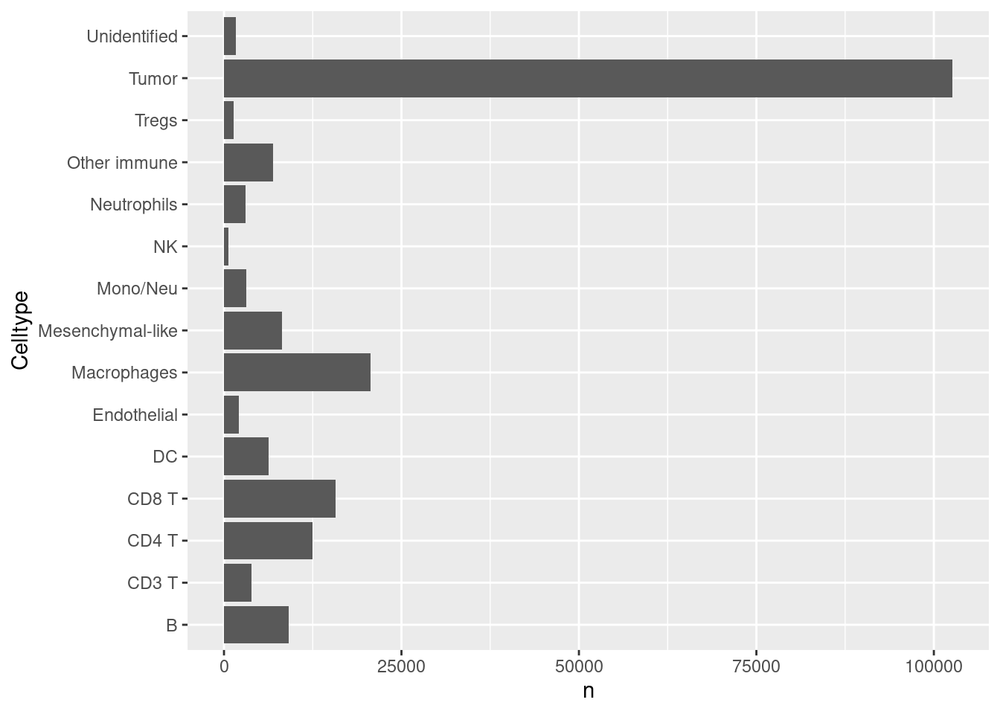
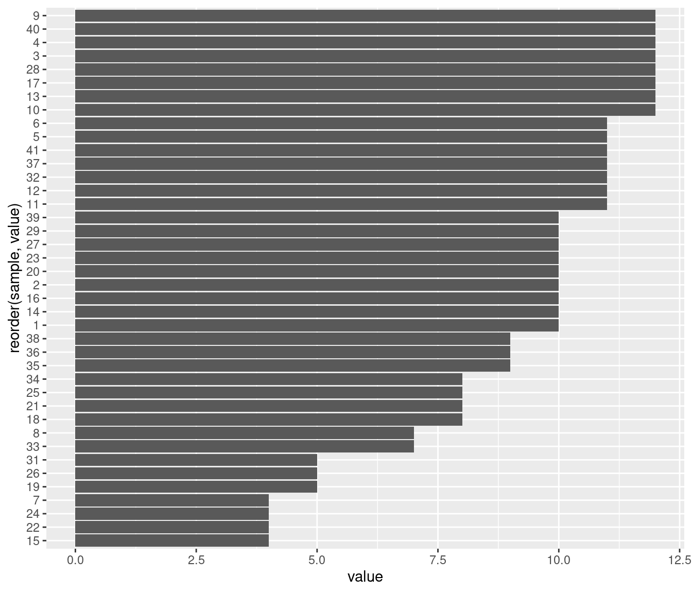
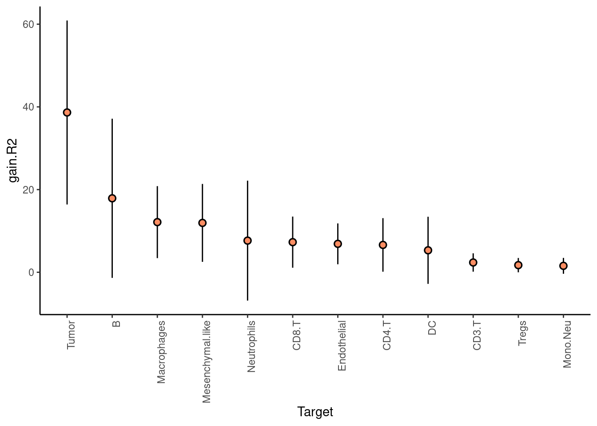
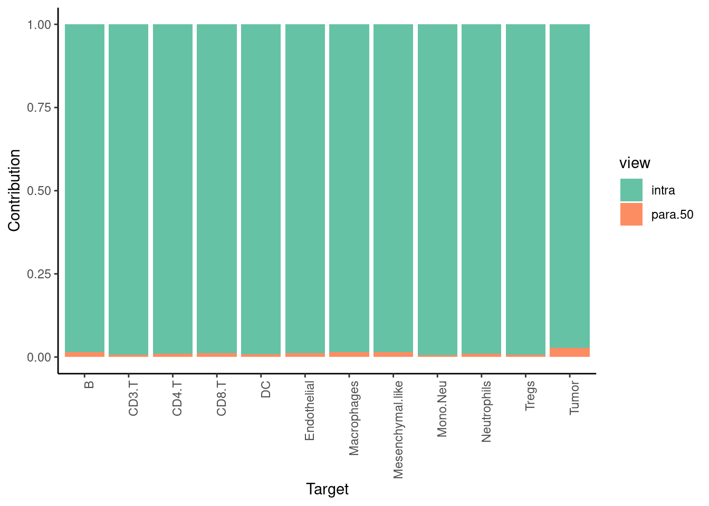
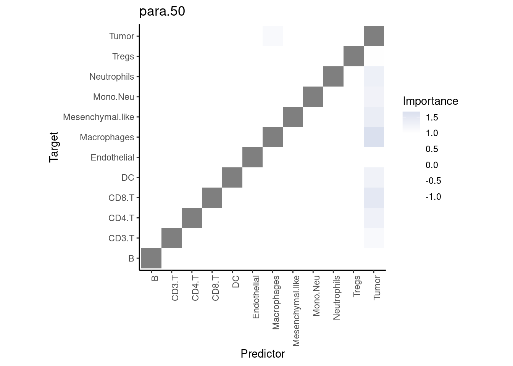
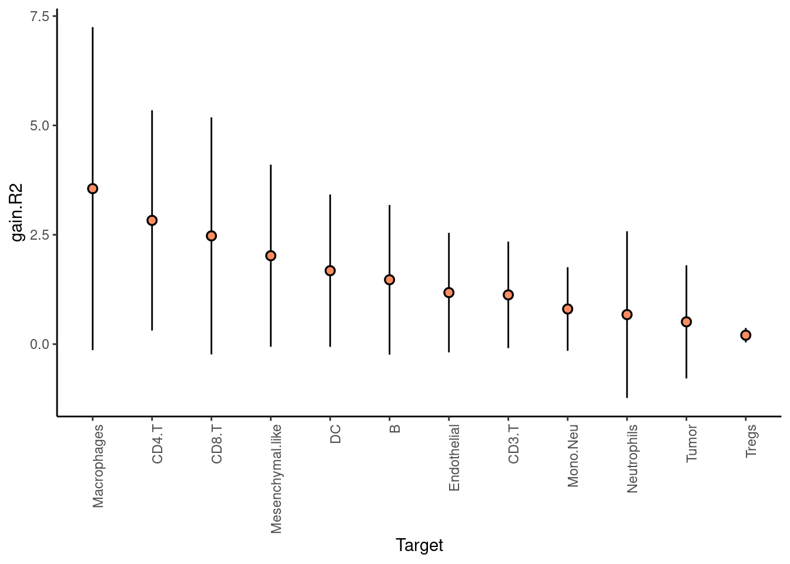
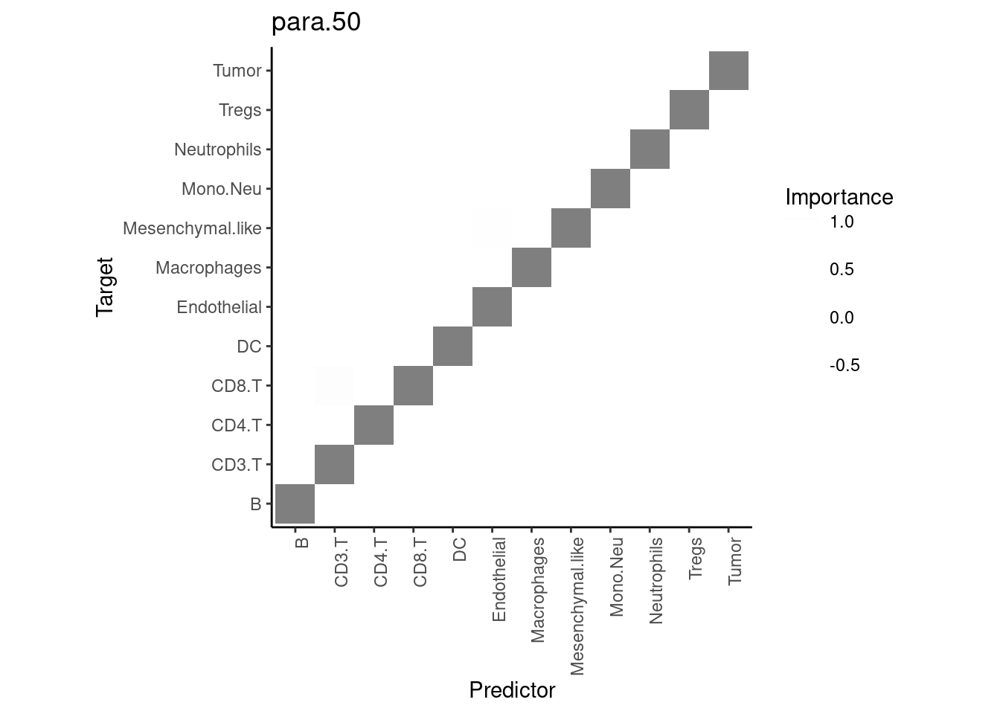
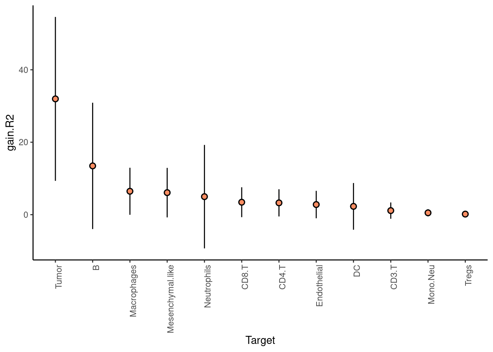
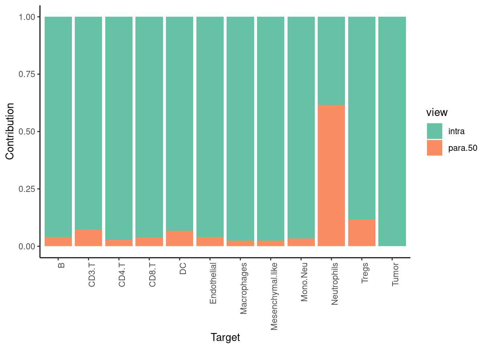
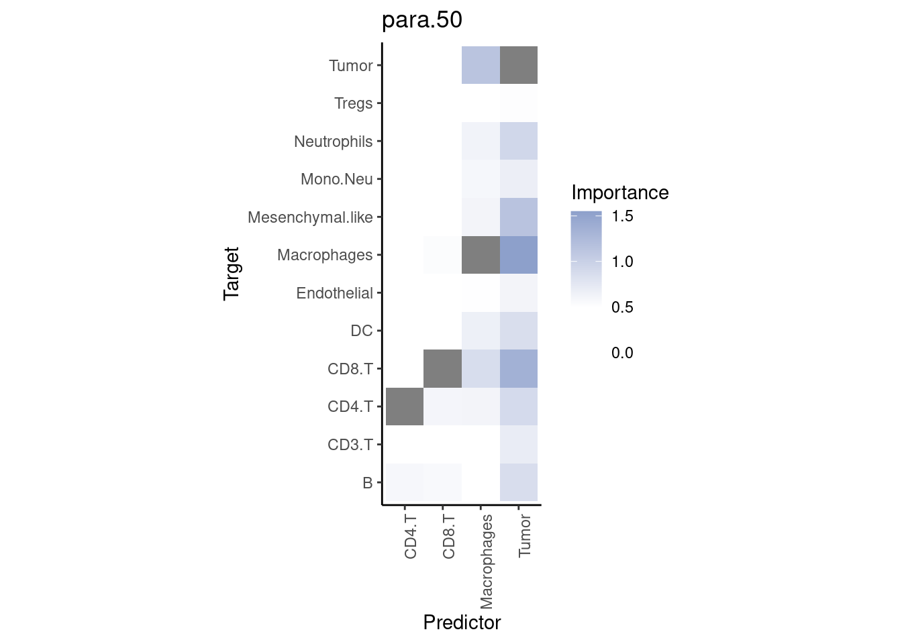

Case Study A
Last updated: 2022-01-13
Checks: 7 0
Knit directory: report/
This reproducible R Markdown analysis was created with workflowr (version 1.6.2). The Checks tab describes the reproducibility checks that were applied when the results were created. The Past versions tab lists the development history.
Great! Since the R Markdown file has been committed to the Git repository, you know the exact version of the code that produced these results.
Great job! The global environment was empty. Objects defined in the global environment can affect the analysis in your R Markdown file in unknown ways. For reproduciblity it’s best to always run the code in an empty environment.
The command set.seed(20211125) was run prior to running the code in the R Markdown file. Setting a seed ensures that any results that rely on randomness, e.g. subsampling or permutations, are reproducible.
Great job! Recording the operating system, R version, and package versions is critical for reproducibility.
Nice! There were no cached chunks for this analysis, so you can be confident that you successfully produced the results during this run.
Great job! Using relative paths to the files within your workflowr project makes it easier to run your code on other machines.
Great! You are using Git for version control. Tracking code development and connecting the code version to the results is critical for reproducibility.
The results in this page were generated with repository version fa0786a. See the Past versions tab to see a history of the changes made to the R Markdown and HTML files.
Note that you need to be careful to ensure that all relevant files for the analysis have been committed to Git prior to generating the results (you can use wflow_publish or wflow_git_commit). workflowr only checks the R Markdown file, but you know if there are other scripts or data files that it depends on. Below is the status of the Git repository when the results were generated:
Ignored files:
Ignored: data/imc/
Ignored: data/merfish_bc/
Ignored: data/merfish_liver/
Ignored: data/merfish_preoptic/
Ignored: data/mibi_tnbc/
Ignored: data/seqfishp_brain/
Ignored: output/2021-12-25-09-41_all_views.RDS
Ignored: output/2022-01-04-07-24_all_results.RDS
Ignored: output/2022-01-05-22-43_all_results.RDS
Ignored: output/2022-01-10-10-49_all_results.RDS
Ignored: output/case_study_A/
Ignored: output/case_study_B/
Untracked files:
Untracked: report.Rproj.RData
Note that any generated files, e.g. HTML, png, CSS, etc., are not included in this status report because it is ok for generated content to have uncommitted changes.
These are the previous versions of the repository in which changes were made to the R Markdown (analysis/case_study_A.Rmd) and HTML (docs/case_study_A.html) files. If you’ve configured a remote Git repository (see ?wflow_git_remote), click on the hyperlinks in the table below to view the files as they were in that past version.
| File | Version | Author | Date | Message |
|---|---|---|---|---|
| Rmd | fa0786a | schae211 | 2022-01-13 | rerun with fixed misty.R |
| html | 63f9bec | schae211 | 2022-01-10 | Build site. |
| Rmd | 84b18a7 | schae211 | 2022-01-10 | removing absolute paths |
| html | b976e9f | schae211 | 2022-01-09 | Build site. |
| Rmd | c1970e0 | schae211 | 2022-01-09 | wflow_publish("analysis/case_study_A.Rmd", verbose = TRUE) |
| html | befa552 | schae211 | 2021-12-26 | Build site. |
| Rmd | 498e920 | schae211 | 2021-12-23 | changing to relative paths |
| html | 781ba63 | schae211 | 2021-12-21 | Build site. |
| html | c20940b | schae211 | 2021-12-21 | Build site. |
| Rmd | 4de4c46 | schae211 | 2021-12-21 | wflow_publish("analysis/case_study_*") |
knitr::opts_chunk$set(echo = TRUE, collapse = TRUE)Introduction
This document is supposed to show how the new implementation can be useful in the case of a neighborhood composition analysis. Meaning whether we can predict the identiy of a cell type using the neighboring cell types.
However, after updating the MISTy meta model from linear regression to ridge regression, MISTy is not able to learn something from the spatial context anymore.
Setup
Packages
Loaded packages.
library(mistyR, warn.conflicts = FALSE)
mistyR is able to run computationally intensive functions
in parallel. Please consider specifying a future::plan(). For example by running
future::plan(future::multisession) before calling mistyR functions.
library(tidyverse, warn.conflicts = FALSE)
-- Attaching packages --------------------------------------- tidyverse 1.3.1 --
v ggplot2 3.3.5 v purrr 0.3.4
v tibble 3.1.6 v dplyr 1.0.7
v tidyr 1.1.4 v stringr 1.4.0
v readr 2.0.2 v forcats 0.5.1
-- Conflicts ------------------------------------------ tidyverse_conflicts() --
x dplyr::filter() masks stats::filter()
x dplyr::lag() masks stats::lag()
library(future, warn.conflicts = FALSE)
plan("multisession", workers=12)Import
Loading data generated in “eda_mibi_tnbc.Rmd”.
raw.data <- readRDS("data/mibi_tnbc_meta.RDS")
raw.data %>% slice_head(n=6)How many samples do we have?
samples <- unique(raw.data$SampleID)
samples
[1] 1 2 3 4 5 6 7 8 9 10 11 12 13 14 15 16 17 18 19 20 21 22 23 24 25
[26] 26 27 28 29 31 32 33 34 35 36 37 38 39 40 41Adding a column in Group specifying the immuneGroup.
meta.data <- raw.data %>%
select(SampleID, cellSize, Group, immuneGroup, row, col) %>%
mutate(Group = case_when(
immuneGroup == "Non-Immune?" ~ Group,
immuneGroup != "Non-Immune?" ~ immuneGroup,
TRUE ~ "NA"
), immuneGroup = NULL)
meta.data %>% slice_head(n=6)Simplifying the cell types.
meta.data <- meta.data %>%
mutate(Group = case_when(
Group == "DC/Mono" | Group == "DC" ~ "DC",
Group == "Keratin-positive tumor" | Group == "Tumor" ~ "Tumor",
TRUE ~ Group
))Visualizing the frequency of the cell types.
meta.data %>%
count(Group) %>%
ggplot() +
geom_bar(aes(x=n, y=Group), stat="identity") +
labs(x = "n", y = "Celltype")
| Version | Author | Date |
|---|---|---|
| 63f9bec | schae211 | 2022-01-10 |
We see already that tumor cells make up by far the most cell types. Such unbalanced datasets pose problems for many machine learning algorithms, as the prediction error can easily be reduced by always predicting the most abundant class.
We will remove NK cells because they are so rare, and Unidentified cells / Other immune because they are not very helpful.
meta.data <- meta.data %>%
filter(!(Group %in% c("Unidentified", "NK", "Other immune")))
#filter(!(Group %in% c("Unidentified", "NK", "Other immune", "Tumor")))Prepare the data by one hot encoding the cell types. Also we will remove from each sample cell types whose total number in the sample in below the cutoff, which is here 10.
lvls <- meta.data$Group %>% unique
cutoff <- 10
expr.smp <- map(samples, function(smp) {
raw.expr <- meta.data %>%
filter(SampleID == smp) %>%
select(Group) %>%
mutate(Group = factor(Group, levels = lvls)) %>%
data.table::as.data.table() %>%
mltools::one_hot() %>%
as_tibble() %>%
select(which(colSums(.) >= cutoff)) %>%
rename_all(~ str_remove(.x, "Group_")) %>%
rename_all(make.names)
}) %>% setNames(samples)
expr.smp$`1` %>% slice_head(n=6)Get the positions per sample.
positions.smp <- map(samples, function(smp) {
meta.data %>%
filter(SampleID == smp) %>%
select(row, col)
}) %>% setNames(samples)
positions.smp$`1` %>% slice_head(n=6)In how many samples is a given cell types retained?
map(expr.smp, ~ colnames(.x)) %>%
unlist %>%
tibble() %>%
rename("celltypes" = ".") %>%
count(celltypes)We see that especially DC (dendritic cells), B cells, NK (natural killer cells), and Tregs (regulatory T-cells) are only present in a quarter or half of the samples.
Check equivalently how many cell types are retained in each sample?
map2_dfr(expr.smp, names(expr.smp), ~ list("value" = ncol(.x),
"sample" = .y)) %>%
ggplot() +
geom_bar(aes(x = value, y = reorder(sample, value)), stat="identity")
| Version | Author | Date |
|---|---|---|
| 63f9bec | schae211 | 2022-01-10 |
We will remove sample 24, since it only contrain 4 distinct cell types.
to_remove <- c(24)
#to_remove <- c(5:41) # tmp for testing
expr.smp <- expr.smp[!(names(expr.smp) %in% to_remove)]
positions.smp <- positions.smp[!(names(positions.smp) %in% to_remove)]MISTy Views
Computing the MISTy Views, based on the 50 nearest neighbors (constant weight). (using quietly to capute the message and warnings).
generate_misty_views <- function(expr.list, position.list) {
map2(expr.list, position.list, function(expr, pos) {
expr %>%
create_initial_view() %>%
add_paraview(positions = pos, l = 50, zoi = 0, family = "constant")
})
}
safe_generate_misty_views <- quietly(generate_misty_views)
misty.views.run <- safe_generate_misty_views(expr.smp, positions.smp)
misty.views.smp <- misty.views.run$resultClick to see warnings
misty.views.run$warnings
character(0)Running MISTy
Random Forest
Running MISTy with the base case.
run_misty_wrapper <- function(misty.views.smp) {
results.paths <-
imap(misty.views.smp, function(misty.views, i) {
misty.views %>%
run_misty(results.folder = paste0("output/case_study_A/RF", i),
bypass.intra = TRUE,
cv.folds = 10,
model.function = random_forest_model)
})
collect_results(results.paths)
}
safe_run_misty <- quietly(run_misty_wrapper)
misty.run.rf <- safe_run_misty(misty.views.smp)
misty.results.rf <- misty.run.rf$resultClick to see warnings
misty.run.rf$warnings
[1] "Targets Tumor, CD3.T, B, CD4.T, DC, Macrophages, CD8.T, Endothelial, Mesenchymal.like, Neutrophils have fewer unique values than cv.folds. This might result in errors during modeling."
[2] "Negative performance detected and replaced with 0 for target Tumor"
[3] "Negative performance detected and replaced with 0 for target CD3.T"
[4] "Negative performance detected and replaced with 0 for target B"
[5] "Negative performance detected and replaced with 0 for target CD4.T"
[6] "Negative performance detected and replaced with 0 for target DC"
[7] "Negative performance detected and replaced with 0 for target Macrophages"
[8] "Negative performance detected and replaced with 0 for target CD8.T"
[9] "Negative performance detected and replaced with 0 for target Endothelial"
[10] "Negative performance detected and replaced with 0 for target Mesenchymal.like"
[11] "Negative performance detected and replaced with 0 for target Neutrophils"
[12] "Targets Tumor, CD3.T, CD4.T, DC, Macrophages, CD8.T, Endothelial, Mono.Neu, Mesenchymal.like, Neutrophils have fewer unique values than cv.folds. This might result in errors during modeling."
[13] "Negative performance detected and replaced with 0 for target Tumor"
[14] "Negative performance detected and replaced with 0 for target CD3.T"
[15] "Negative performance detected and replaced with 0 for target CD4.T"
[16] "Negative performance detected and replaced with 0 for target DC"
[17] "Negative performance detected and replaced with 0 for target Macrophages"
[18] "Negative performance detected and replaced with 0 for target CD8.T"
[19] "Negative performance detected and replaced with 0 for target Endothelial"
[20] "Negative performance detected and replaced with 0 for target Mono.Neu"
[21] "Negative performance detected and replaced with 0 for target Mesenchymal.like"
[22] "Negative performance detected and replaced with 0 for target Neutrophils"
[23] "Targets Tumor, CD3.T, B, CD4.T, DC, Macrophages, CD8.T, Endothelial, Mono.Neu, Mesenchymal.like, Neutrophils, Tregs have fewer unique values than cv.folds. This might result in errors during modeling."
[24] "Negative performance detected and replaced with 0 for target Tumor"
[25] "Negative performance detected and replaced with 0 for target CD3.T"
[26] "Negative performance detected and replaced with 0 for target B"
[27] "Negative performance detected and replaced with 0 for target CD4.T"
[28] "Negative performance detected and replaced with 0 for target DC"
[29] "Negative performance detected and replaced with 0 for target Macrophages"
[30] "Negative performance detected and replaced with 0 for target CD8.T"
[31] "Negative performance detected and replaced with 0 for target Endothelial"
[32] "Negative performance detected and replaced with 0 for target Mono.Neu"
[33] "Negative performance detected and replaced with 0 for target Mesenchymal.like"
[34] "Negative performance detected and replaced with 0 for target Neutrophils"
[35] "Negative performance detected and replaced with 0 for target Tregs"
[36] "Targets Tumor, CD3.T, B, CD4.T, DC, Macrophages, CD8.T, Endothelial, Mono.Neu, Mesenchymal.like, Neutrophils, Tregs have fewer unique values than cv.folds. This might result in errors during modeling."
[37] "Negative performance detected and replaced with 0 for target Tumor"
[38] "Negative performance detected and replaced with 0 for target CD3.T"
[39] "Negative performance detected and replaced with 0 for target B"
[40] "Negative performance detected and replaced with 0 for target CD4.T"
[41] "Negative performance detected and replaced with 0 for target DC"
[42] "Negative performance detected and replaced with 0 for target Macrophages"
[43] "Negative performance detected and replaced with 0 for target CD8.T"
[44] "Negative performance detected and replaced with 0 for target Endothelial"
[45] "Negative performance detected and replaced with 0 for target Mono.Neu"
[46] "Negative performance detected and replaced with 0 for target Mesenchymal.like"
[47] "Negative performance detected and replaced with 0 for target Neutrophils"
[48] "Negative performance detected and replaced with 0 for target Tregs"
[49] "Targets Tumor, CD3.T, CD4.T, DC, Macrophages, CD8.T, Endothelial, Mono.Neu, Mesenchymal.like, Neutrophils, Tregs have fewer unique values than cv.folds. This might result in errors during modeling."
[50] "Negative performance detected and replaced with 0 for target Tumor"
[51] "Negative performance detected and replaced with 0 for target CD3.T"
[52] "Negative performance detected and replaced with 0 for target CD4.T"
[53] "Negative performance detected and replaced with 0 for target DC"
[54] "Negative performance detected and replaced with 0 for target Macrophages"
[55] "Negative performance detected and replaced with 0 for target CD8.T"
[56] "Negative performance detected and replaced with 0 for target Endothelial"
[57] "Negative performance detected and replaced with 0 for target Mono.Neu"
[58] "Negative performance detected and replaced with 0 for target Mesenchymal.like"
[59] "Negative performance detected and replaced with 0 for target Neutrophils"
[60] "Negative performance detected and replaced with 0 for target Tregs"
[61] "Targets Tumor, CD3.T, B, CD4.T, DC, Macrophages, CD8.T, Endothelial, Mono.Neu, Mesenchymal.like, Neutrophils have fewer unique values than cv.folds. This might result in errors during modeling."
[62] "Negative performance detected and replaced with 0 for target Tumor"
[63] "Negative performance detected and replaced with 0 for target CD3.T"
[64] "Negative performance detected and replaced with 0 for target B"
[65] "Negative performance detected and replaced with 0 for target CD4.T"
[66] "Negative performance detected and replaced with 0 for target DC"
[67] "Negative performance detected and replaced with 0 for target Macrophages"
[68] "Negative performance detected and replaced with 0 for target CD8.T"
[69] "Negative performance detected and replaced with 0 for target Endothelial"
[70] "Negative performance detected and replaced with 0 for target Mono.Neu"
[71] "Negative performance detected and replaced with 0 for target Mesenchymal.like"
[72] "Negative performance detected and replaced with 0 for target Neutrophils"
[73] "Targets Tumor, Macrophages, Mesenchymal.like, Neutrophils have fewer unique values than cv.folds. This might result in errors during modeling."
[74] "Negative performance detected and replaced with 0 for target Tumor"
[75] "Negative performance detected and replaced with 0 for target Macrophages"
[76] "Negative performance detected and replaced with 0 for target Mesenchymal.like"
[77] "Negative performance detected and replaced with 0 for target Neutrophils"
[78] "Targets Tumor, CD3.T, DC, Macrophages, CD8.T, Mono.Neu, Mesenchymal.like have fewer unique values than cv.folds. This might result in errors during modeling."
[79] "Negative performance detected and replaced with 0 for target Tumor"
[80] "Negative performance detected and replaced with 0 for target CD3.T"
[81] "Negative performance detected and replaced with 0 for target DC"
[82] "Negative performance detected and replaced with 0 for target Macrophages"
[83] "Negative performance detected and replaced with 0 for target CD8.T"
[84] "Negative performance detected and replaced with 0 for target Mono.Neu"
[85] "Negative performance detected and replaced with 0 for target Mesenchymal.like"
[86] "Targets Tumor, CD3.T, B, CD4.T, DC, Macrophages, CD8.T, Endothelial, Mono.Neu, Mesenchymal.like, Neutrophils, Tregs have fewer unique values than cv.folds. This might result in errors during modeling."
[87] "Negative performance detected and replaced with 0 for target Tumor"
[88] "Negative performance detected and replaced with 0 for target CD3.T"
[89] "Negative performance detected and replaced with 0 for target B"
[90] "Negative performance detected and replaced with 0 for target CD4.T"
[91] "Negative performance detected and replaced with 0 for target DC"
[92] "Negative performance detected and replaced with 0 for target Macrophages"
[93] "Negative performance detected and replaced with 0 for target CD8.T"
[94] "Negative performance detected and replaced with 0 for target Endothelial"
[95] "Negative performance detected and replaced with 0 for target Mono.Neu"
[96] "Negative performance detected and replaced with 0 for target Mesenchymal.like"
[97] "Negative performance detected and replaced with 0 for target Neutrophils"
[98] "Negative performance detected and replaced with 0 for target Tregs"
[99] "Targets Tumor, CD3.T, B, CD4.T, DC, Macrophages, CD8.T, Endothelial, Mono.Neu, Mesenchymal.like, Neutrophils, Tregs have fewer unique values than cv.folds. This might result in errors during modeling."
[100] "Negative performance detected and replaced with 0 for target Tumor"
[101] "Negative performance detected and replaced with 0 for target CD3.T"
[102] "Negative performance detected and replaced with 0 for target B"
[103] "Negative performance detected and replaced with 0 for target CD4.T"
[104] "Negative performance detected and replaced with 0 for target DC"
[105] "Negative performance detected and replaced with 0 for target Macrophages"
[106] "Negative performance detected and replaced with 0 for target CD8.T"
[107] "Negative performance detected and replaced with 0 for target Endothelial"
[108] "Negative performance detected and replaced with 0 for target Mono.Neu"
[109] "Negative performance detected and replaced with 0 for target Mesenchymal.like"
[110] "Negative performance detected and replaced with 0 for target Neutrophils"
[111] "Negative performance detected and replaced with 0 for target Tregs"
[112] "Targets Tumor, CD3.T, CD4.T, DC, Macrophages, CD8.T, Endothelial, Mono.Neu, Mesenchymal.like, Neutrophils, Tregs have fewer unique values than cv.folds. This might result in errors during modeling."
[113] "Negative performance detected and replaced with 0 for target Tumor"
[114] "Negative performance detected and replaced with 0 for target CD3.T"
[115] "Negative performance detected and replaced with 0 for target CD4.T"
[116] "Negative performance detected and replaced with 0 for target DC"
[117] "Negative performance detected and replaced with 0 for target Macrophages"
[118] "Negative performance detected and replaced with 0 for target CD8.T"
[119] "Negative performance detected and replaced with 0 for target Endothelial"
[120] "Negative performance detected and replaced with 0 for target Mono.Neu"
[121] "Negative performance detected and replaced with 0 for target Mesenchymal.like"
[122] "Negative performance detected and replaced with 0 for target Neutrophils"
[123] "Negative performance detected and replaced with 0 for target Tregs"
[124] "Targets Tumor, CD3.T, B, CD4.T, DC, Macrophages, CD8.T, Mono.Neu, Mesenchymal.like, Neutrophils, Tregs have fewer unique values than cv.folds. This might result in errors during modeling."
[125] "Negative performance detected and replaced with 0 for target Tumor"
[126] "Negative performance detected and replaced with 0 for target CD3.T"
[127] "Negative performance detected and replaced with 0 for target B"
[128] "Negative performance detected and replaced with 0 for target CD4.T"
[129] "Negative performance detected and replaced with 0 for target DC"
[130] "Negative performance detected and replaced with 0 for target Macrophages"
[131] "Negative performance detected and replaced with 0 for target CD8.T"
[132] "Negative performance detected and replaced with 0 for target Mono.Neu"
[133] "Negative performance detected and replaced with 0 for target Mesenchymal.like"
[134] "Negative performance detected and replaced with 0 for target Neutrophils"
[135] "Negative performance detected and replaced with 0 for target Tregs"
[136] "Targets Tumor, CD3.T, B, CD4.T, DC, Macrophages, CD8.T, Endothelial, Mono.Neu, Mesenchymal.like, Neutrophils, Tregs have fewer unique values than cv.folds. This might result in errors during modeling."
[137] "Negative performance detected and replaced with 0 for target Tumor"
[138] "Negative performance detected and replaced with 0 for target CD3.T"
[139] "Negative performance detected and replaced with 0 for target B"
[140] "Negative performance detected and replaced with 0 for target CD4.T"
[141] "Negative performance detected and replaced with 0 for target DC"
[142] "Negative performance detected and replaced with 0 for target Macrophages"
[143] "Negative performance detected and replaced with 0 for target CD8.T"
[144] "Negative performance detected and replaced with 0 for target Endothelial"
[145] "Negative performance detected and replaced with 0 for target Mono.Neu"
[146] "Negative performance detected and replaced with 0 for target Mesenchymal.like"
[147] "Negative performance detected and replaced with 0 for target Neutrophils"
[148] "Negative performance detected and replaced with 0 for target Tregs"
[149] "Targets Tumor, CD3.T, CD4.T, DC, Macrophages, CD8.T, Endothelial, Mono.Neu, Mesenchymal.like, Neutrophils have fewer unique values than cv.folds. This might result in errors during modeling."
[150] "Negative performance detected and replaced with 0 for target Tumor"
[151] "Negative performance detected and replaced with 0 for target CD3.T"
[152] "Negative performance detected and replaced with 0 for target CD4.T"
[153] "Negative performance detected and replaced with 0 for target DC"
[154] "Negative performance detected and replaced with 0 for target Macrophages"
[155] "Negative performance detected and replaced with 0 for target CD8.T"
[156] "Negative performance detected and replaced with 0 for target Endothelial"
[157] "Negative performance detected and replaced with 0 for target Mono.Neu"
[158] "Negative performance detected and replaced with 0 for target Mesenchymal.like"
[159] "Negative performance detected and replaced with 0 for target Neutrophils"
[160] "Targets Tumor, Macrophages, Endothelial, Mesenchymal.like have fewer unique values than cv.folds. This might result in errors during modeling."
[161] "Negative performance detected and replaced with 0 for target Tumor"
[162] "Negative performance detected and replaced with 0 for target Macrophages"
[163] "Negative performance detected and replaced with 0 for target Endothelial"
[164] "Negative performance detected and replaced with 0 for target Mesenchymal.like"
[165] "Targets Tumor, CD3.T, B, CD4.T, DC, Macrophages, CD8.T, Endothelial, Neutrophils, Tregs have fewer unique values than cv.folds. This might result in errors during modeling."
[166] "Negative performance detected and replaced with 0 for target Tumor"
[167] "Negative performance detected and replaced with 0 for target CD3.T"
[168] "Negative performance detected and replaced with 0 for target B"
[169] "Negative performance detected and replaced with 0 for target CD4.T"
[170] "Negative performance detected and replaced with 0 for target DC"
[171] "Negative performance detected and replaced with 0 for target Macrophages"
[172] "Negative performance detected and replaced with 0 for target CD8.T"
[173] "Negative performance detected and replaced with 0 for target Endothelial"
[174] "Negative performance detected and replaced with 0 for target Neutrophils"
[175] "Negative performance detected and replaced with 0 for target Tregs"
[176] "Targets Tumor, CD3.T, B, CD4.T, DC, Macrophages, CD8.T, Endothelial, Mono.Neu, Mesenchymal.like, Neutrophils, Tregs have fewer unique values than cv.folds. This might result in errors during modeling."
[177] "Negative performance detected and replaced with 0 for target Tumor"
[178] "Negative performance detected and replaced with 0 for target CD3.T"
[179] "Negative performance detected and replaced with 0 for target B"
[180] "Negative performance detected and replaced with 0 for target CD4.T"
[181] "Negative performance detected and replaced with 0 for target DC"
[182] "Negative performance detected and replaced with 0 for target Macrophages"
[183] "Negative performance detected and replaced with 0 for target CD8.T"
[184] "Negative performance detected and replaced with 0 for target Endothelial"
[185] "Negative performance detected and replaced with 0 for target Mono.Neu"
[186] "Negative performance detected and replaced with 0 for target Mesenchymal.like"
[187] "Negative performance detected and replaced with 0 for target Neutrophils"
[188] "Negative performance detected and replaced with 0 for target Tregs"
[189] "Targets Tumor, CD3.T, CD4.T, Macrophages, CD8.T, Mono.Neu, Neutrophils, Tregs have fewer unique values than cv.folds. This might result in errors during modeling."
[190] "Negative performance detected and replaced with 0 for target Tumor"
[191] "Negative performance detected and replaced with 0 for target CD3.T"
[192] "Negative performance detected and replaced with 0 for target CD4.T"
[193] "Negative performance detected and replaced with 0 for target Macrophages"
[194] "Negative performance detected and replaced with 0 for target CD8.T"
[195] "Negative performance detected and replaced with 0 for target Mono.Neu"
[196] "Negative performance detected and replaced with 0 for target Neutrophils"
[197] "Negative performance detected and replaced with 0 for target Tregs"
[198] "Targets Tumor, DC, Macrophages, Endothelial, Mesenchymal.like have fewer unique values than cv.folds. This might result in errors during modeling."
[199] "Negative performance detected and replaced with 0 for target Tumor"
[200] "Negative performance detected and replaced with 0 for target DC"
[201] "Negative performance detected and replaced with 0 for target Macrophages"
[202] "Negative performance detected and replaced with 0 for target Endothelial"
[203] "Negative performance detected and replaced with 0 for target Mesenchymal.like"
[204] "Targets Tumor, CD3.T, B, CD4.T, DC, Macrophages, CD8.T, Mono.Neu, Mesenchymal.like, Neutrophils have fewer unique values than cv.folds. This might result in errors during modeling."
[205] "Negative performance detected and replaced with 0 for target Tumor"
[206] "Negative performance detected and replaced with 0 for target CD3.T"
[207] "Negative performance detected and replaced with 0 for target B"
[208] "Negative performance detected and replaced with 0 for target CD4.T"
[209] "Negative performance detected and replaced with 0 for target DC"
[210] "Negative performance detected and replaced with 0 for target Macrophages"
[211] "Negative performance detected and replaced with 0 for target CD8.T"
[212] "Negative performance detected and replaced with 0 for target Mono.Neu"
[213] "Negative performance detected and replaced with 0 for target Mesenchymal.like"
[214] "Negative performance detected and replaced with 0 for target Neutrophils"
[215] "Targets Tumor, CD4.T, DC, Macrophages, Endothelial, Mono.Neu, Mesenchymal.like, Neutrophils have fewer unique values than cv.folds. This might result in errors during modeling."
[216] "Negative performance detected and replaced with 0 for target Tumor"
[217] "Negative performance detected and replaced with 0 for target CD4.T"
[218] "Negative performance detected and replaced with 0 for target DC"
[219] "Negative performance detected and replaced with 0 for target Macrophages"
[220] "Negative performance detected and replaced with 0 for target Endothelial"
[221] "Negative performance detected and replaced with 0 for target Mono.Neu"
[222] "Negative performance detected and replaced with 0 for target Mesenchymal.like"
[223] "Negative performance detected and replaced with 0 for target Neutrophils"
[224] "Targets Tumor, Macrophages, Endothelial, Mesenchymal.like have fewer unique values than cv.folds. This might result in errors during modeling."
[225] "Negative performance detected and replaced with 0 for target Tumor"
[226] "Negative performance detected and replaced with 0 for target Macrophages"
[227] "Negative performance detected and replaced with 0 for target Endothelial"
[228] "Negative performance detected and replaced with 0 for target Mesenchymal.like"
[229] "Targets Tumor, CD3.T, CD4.T, DC, Macrophages, CD8.T, Endothelial, Mono.Neu, Mesenchymal.like, Neutrophils have fewer unique values than cv.folds. This might result in errors during modeling."
[230] "Negative performance detected and replaced with 0 for target Tumor"
[231] "Negative performance detected and replaced with 0 for target CD3.T"
[232] "Negative performance detected and replaced with 0 for target CD4.T"
[233] "Negative performance detected and replaced with 0 for target DC"
[234] "Negative performance detected and replaced with 0 for target Macrophages"
[235] "Negative performance detected and replaced with 0 for target CD8.T"
[236] "Negative performance detected and replaced with 0 for target Endothelial"
[237] "Negative performance detected and replaced with 0 for target Mono.Neu"
[238] "Negative performance detected and replaced with 0 for target Mesenchymal.like"
[239] "Negative performance detected and replaced with 0 for target Neutrophils"
[240] "Targets Tumor, CD4.T, DC, Macrophages, Endothelial, Mono.Neu, Mesenchymal.like, Neutrophils have fewer unique values than cv.folds. This might result in errors during modeling."
[241] "Negative performance detected and replaced with 0 for target Tumor"
[242] "Negative performance detected and replaced with 0 for target CD4.T"
[243] "Negative performance detected and replaced with 0 for target DC"
[244] "Negative performance detected and replaced with 0 for target Macrophages"
[245] "Negative performance detected and replaced with 0 for target Endothelial"
[246] "Negative performance detected and replaced with 0 for target Mono.Neu"
[247] "Negative performance detected and replaced with 0 for target Mesenchymal.like"
[248] "Negative performance detected and replaced with 0 for target Neutrophils"
[249] "Targets Tumor, Macrophages, Endothelial, Mesenchymal.like, Neutrophils have fewer unique values than cv.folds. This might result in errors during modeling."
[250] "Negative performance detected and replaced with 0 for target Tumor"
[251] "Negative performance detected and replaced with 0 for target Macrophages"
[252] "Negative performance detected and replaced with 0 for target Endothelial"
[253] "Negative performance detected and replaced with 0 for target Mesenchymal.like"
[254] "Negative performance detected and replaced with 0 for target Neutrophils"
[255] "Targets Tumor, CD3.T, CD4.T, DC, Macrophages, CD8.T, Endothelial, Mono.Neu, Mesenchymal.like, Neutrophils have fewer unique values than cv.folds. This might result in errors during modeling."
[256] "Negative performance detected and replaced with 0 for target Tumor"
[257] "Negative performance detected and replaced with 0 for target CD3.T"
[258] "Negative performance detected and replaced with 0 for target CD4.T"
[259] "Negative performance detected and replaced with 0 for target DC"
[260] "Negative performance detected and replaced with 0 for target Macrophages"
[261] "Negative performance detected and replaced with 0 for target CD8.T"
[262] "Negative performance detected and replaced with 0 for target Endothelial"
[263] "Negative performance detected and replaced with 0 for target Mono.Neu"
[264] "Negative performance detected and replaced with 0 for target Mesenchymal.like"
[265] "Negative performance detected and replaced with 0 for target Neutrophils"
[266] "Targets Tumor, CD3.T, B, CD4.T, DC, Macrophages, CD8.T, Endothelial, Mono.Neu, Mesenchymal.like, Neutrophils, Tregs have fewer unique values than cv.folds. This might result in errors during modeling."
[267] "Negative performance detected and replaced with 0 for target Tumor"
[268] "Negative performance detected and replaced with 0 for target CD3.T"
[269] "Negative performance detected and replaced with 0 for target B"
[270] "Negative performance detected and replaced with 0 for target CD4.T"
[271] "Negative performance detected and replaced with 0 for target DC"
[272] "Negative performance detected and replaced with 0 for target Macrophages"
[273] "Negative performance detected and replaced with 0 for target CD8.T"
[274] "Negative performance detected and replaced with 0 for target Endothelial"
[275] "Negative performance detected and replaced with 0 for target Mono.Neu"
[276] "Negative performance detected and replaced with 0 for target Mesenchymal.like"
[277] "Negative performance detected and replaced with 0 for target Neutrophils"
[278] "Negative performance detected and replaced with 0 for target Tregs"
[279] "Targets Tumor, CD3.T, CD4.T, DC, Macrophages, CD8.T, Endothelial, Mono.Neu, Mesenchymal.like, Tregs have fewer unique values than cv.folds. This might result in errors during modeling."
[280] "Negative performance detected and replaced with 0 for target Tumor"
[281] "Negative performance detected and replaced with 0 for target CD3.T"
[282] "Negative performance detected and replaced with 0 for target CD4.T"
[283] "Negative performance detected and replaced with 0 for target DC"
[284] "Negative performance detected and replaced with 0 for target Macrophages"
[285] "Negative performance detected and replaced with 0 for target CD8.T"
[286] "Negative performance detected and replaced with 0 for target Endothelial"
[287] "Negative performance detected and replaced with 0 for target Mono.Neu"
[288] "Negative performance detected and replaced with 0 for target Mesenchymal.like"
[289] "Negative performance detected and replaced with 0 for target Tregs"
[290] "Targets Tumor, Macrophages, Endothelial, Mesenchymal.like, Neutrophils have fewer unique values than cv.folds. This might result in errors during modeling."
[291] "Negative performance detected and replaced with 0 for target Tumor"
[292] "Negative performance detected and replaced with 0 for target Macrophages"
[293] "Negative performance detected and replaced with 0 for target Endothelial"
[294] "Negative performance detected and replaced with 0 for target Mesenchymal.like"
[295] "Negative performance detected and replaced with 0 for target Neutrophils"
[296] "Targets Tumor, CD3.T, B, CD4.T, DC, Macrophages, CD8.T, Endothelial, Mono.Neu, Neutrophils, Tregs have fewer unique values than cv.folds. This might result in errors during modeling."
[297] "Negative performance detected and replaced with 0 for target Tumor"
[298] "Negative performance detected and replaced with 0 for target CD3.T"
[299] "Negative performance detected and replaced with 0 for target B"
[300] "Negative performance detected and replaced with 0 for target CD4.T"
[301] "Negative performance detected and replaced with 0 for target DC"
[302] "Negative performance detected and replaced with 0 for target Macrophages"
[303] "Negative performance detected and replaced with 0 for target CD8.T"
[304] "Negative performance detected and replaced with 0 for target Endothelial"
[305] "Negative performance detected and replaced with 0 for target Mono.Neu"
[306] "Negative performance detected and replaced with 0 for target Neutrophils"
[307] "Negative performance detected and replaced with 0 for target Tregs"
[308] "Targets Tumor, CD3.T, CD4.T, DC, Macrophages, CD8.T, Mesenchymal.like have fewer unique values than cv.folds. This might result in errors during modeling."
[309] "Negative performance detected and replaced with 0 for target Tumor"
[310] "Negative performance detected and replaced with 0 for target CD3.T"
[311] "Negative performance detected and replaced with 0 for target CD4.T"
[312] "Negative performance detected and replaced with 0 for target DC"
[313] "Negative performance detected and replaced with 0 for target Macrophages"
[314] "Negative performance detected and replaced with 0 for target CD8.T"
[315] "Negative performance detected and replaced with 0 for target Mesenchymal.like"
[316] "Targets Tumor, DC, Macrophages, CD8.T, Endothelial, Mono.Neu, Mesenchymal.like, Neutrophils have fewer unique values than cv.folds. This might result in errors during modeling."
[317] "Negative performance detected and replaced with 0 for target Tumor"
[318] "Negative performance detected and replaced with 0 for target DC"
[319] "Negative performance detected and replaced with 0 for target Macrophages"
[320] "Negative performance detected and replaced with 0 for target CD8.T"
[321] "Negative performance detected and replaced with 0 for target Endothelial"
[322] "Negative performance detected and replaced with 0 for target Mono.Neu"
[323] "Negative performance detected and replaced with 0 for target Mesenchymal.like"
[324] "Negative performance detected and replaced with 0 for target Neutrophils"
[325] "Targets Tumor, CD3.T, B, CD4.T, DC, Macrophages, CD8.T, Endothelial, Mesenchymal.like have fewer unique values than cv.folds. This might result in errors during modeling."
[326] "Negative performance detected and replaced with 0 for target Tumor"
[327] "Negative performance detected and replaced with 0 for target CD3.T"
[328] "Negative performance detected and replaced with 0 for target B"
[329] "Negative performance detected and replaced with 0 for target CD4.T"
[330] "Negative performance detected and replaced with 0 for target DC"
[331] "Negative performance detected and replaced with 0 for target Macrophages"
[332] "Negative performance detected and replaced with 0 for target CD8.T"
[333] "Negative performance detected and replaced with 0 for target Endothelial"
[334] "Negative performance detected and replaced with 0 for target Mesenchymal.like"
[335] "Targets Tumor, CD3.T, CD4.T, DC, Macrophages, CD8.T, Endothelial, Mesenchymal.like, Neutrophils have fewer unique values than cv.folds. This might result in errors during modeling."
[336] "Negative performance detected and replaced with 0 for target Tumor"
[337] "Negative performance detected and replaced with 0 for target CD3.T"
[338] "Negative performance detected and replaced with 0 for target CD4.T"
[339] "Negative performance detected and replaced with 0 for target DC"
[340] "Negative performance detected and replaced with 0 for target Macrophages"
[341] "Negative performance detected and replaced with 0 for target CD8.T"
[342] "Negative performance detected and replaced with 0 for target Endothelial"
[343] "Negative performance detected and replaced with 0 for target Mesenchymal.like"
[344] "Negative performance detected and replaced with 0 for target Neutrophils"
[345] "Targets Tumor, CD3.T, B, CD4.T, DC, Macrophages, CD8.T, Endothelial, Mono.Neu, Mesenchymal.like, Neutrophils have fewer unique values than cv.folds. This might result in errors during modeling."
[346] "Negative performance detected and replaced with 0 for target Tumor"
[347] "Negative performance detected and replaced with 0 for target CD3.T"
[348] "Negative performance detected and replaced with 0 for target B"
[349] "Negative performance detected and replaced with 0 for target CD4.T"
[350] "Negative performance detected and replaced with 0 for target DC"
[351] "Negative performance detected and replaced with 0 for target Macrophages"
[352] "Negative performance detected and replaced with 0 for target CD8.T"
[353] "Negative performance detected and replaced with 0 for target Endothelial"
[354] "Negative performance detected and replaced with 0 for target Mono.Neu"
[355] "Negative performance detected and replaced with 0 for target Mesenchymal.like"
[356] "Negative performance detected and replaced with 0 for target Neutrophils"
[357] "Targets Tumor, CD3.T, CD4.T, DC, Macrophages, CD8.T, Endothelial, Mono.Neu, Mesenchymal.like have fewer unique values than cv.folds. This might result in errors during modeling."
[358] "Negative performance detected and replaced with 0 for target Tumor"
[359] "Negative performance detected and replaced with 0 for target CD3.T"
[360] "Negative performance detected and replaced with 0 for target CD4.T"
[361] "Negative performance detected and replaced with 0 for target DC"
[362] "Negative performance detected and replaced with 0 for target Macrophages"
[363] "Negative performance detected and replaced with 0 for target CD8.T"
[364] "Negative performance detected and replaced with 0 for target Endothelial"
[365] "Negative performance detected and replaced with 0 for target Mono.Neu"
[366] "Negative performance detected and replaced with 0 for target Mesenchymal.like"
[367] "Targets Tumor, CD3.T, B, CD4.T, DC, Macrophages, CD8.T, Endothelial, Mono.Neu, Neutrophils have fewer unique values than cv.folds. This might result in errors during modeling."
[368] "Negative performance detected and replaced with 0 for target Tumor"
[369] "Negative performance detected and replaced with 0 for target CD3.T"
[370] "Negative performance detected and replaced with 0 for target B"
[371] "Negative performance detected and replaced with 0 for target CD4.T"
[372] "Negative performance detected and replaced with 0 for target DC"
[373] "Negative performance detected and replaced with 0 for target Macrophages"
[374] "Negative performance detected and replaced with 0 for target CD8.T"
[375] "Negative performance detected and replaced with 0 for target Endothelial"
[376] "Negative performance detected and replaced with 0 for target Mono.Neu"
[377] "Negative performance detected and replaced with 0 for target Neutrophils"
[378] "Targets Tumor, CD3.T, B, CD4.T, DC, Macrophages, CD8.T, Endothelial, Mono.Neu, Mesenchymal.like, Neutrophils, Tregs have fewer unique values than cv.folds. This might result in errors during modeling."
[379] "Negative performance detected and replaced with 0 for target Tumor"
[380] "Negative performance detected and replaced with 0 for target CD3.T"
[381] "Negative performance detected and replaced with 0 for target B"
[382] "Negative performance detected and replaced with 0 for target CD4.T"
[383] "Negative performance detected and replaced with 0 for target DC"
[384] "Negative performance detected and replaced with 0 for target Macrophages"
[385] "Negative performance detected and replaced with 0 for target CD8.T"
[386] "Negative performance detected and replaced with 0 for target Endothelial"
[387] "Negative performance detected and replaced with 0 for target Mono.Neu"
[388] "Negative performance detected and replaced with 0 for target Mesenchymal.like"
[389] "Negative performance detected and replaced with 0 for target Neutrophils"
[390] "Negative performance detected and replaced with 0 for target Tregs"
[391] "Targets Tumor, CD3.T, B, CD4.T, DC, Macrophages, CD8.T, Endothelial, Mono.Neu, Mesenchymal.like, Neutrophils have fewer unique values than cv.folds. This might result in errors during modeling."
[392] "Negative performance detected and replaced with 0 for target Tumor"
[393] "Negative performance detected and replaced with 0 for target CD3.T"
[394] "Negative performance detected and replaced with 0 for target B"
[395] "Negative performance detected and replaced with 0 for target CD4.T"
[396] "Negative performance detected and replaced with 0 for target DC"
[397] "Negative performance detected and replaced with 0 for target Macrophages"
[398] "Negative performance detected and replaced with 0 for target CD8.T"
[399] "Negative performance detected and replaced with 0 for target Endothelial"
[400] "Negative performance detected and replaced with 0 for target Mono.Neu"
[401] "Negative performance detected and replaced with 0 for target Mesenchymal.like"
[402] "Negative performance detected and replaced with 0 for target Neutrophils" As mentioned in the introduction, MISTy is not able to learn anything from the spatial context.
misty.results.rf %>%
plot_improvement_stats("gain.R2") %>%
plot_view_contributions() %>%
plot_interaction_heatmap("para.50", cutoff = 0.5, clean = TRUE)
| Version | Author | Date |
|---|---|---|
| 63f9bec | schae211 | 2022-01-10 |

| Version | Author | Date |
|---|---|---|
| 63f9bec | schae211 | 2022-01-10 |

| Version | Author | Date |
|---|---|---|
| 63f9bec | schae211 | 2022-01-10 |
Regression Boosted Trees
run_misty_wrapper <- function(misty.views.smp) {
results.paths <-
imap(misty.views.smp, function(misty.views, i) {
misty.views %>%
run_misty(results.folder = paste0("output/case_study_A/TBOOST", i),
bypass.intra = TRUE,
cv.folds = 10,
model.function = gradient_boosting_model, booster = "gbtree")
})
collect_results(results.paths)
}
safe_run_misty <- quietly(run_misty_wrapper)
misty.run.tboost <- safe_run_misty(misty.views.smp)
misty.results.tboost <- misty.run.tboost$resultClick to see warnings
misty.run.tboost$warnings
[1] "Targets Tumor, CD3.T, B, CD4.T, DC, Macrophages, CD8.T, Endothelial, Mesenchymal.like, Neutrophils have fewer unique values than cv.folds. This might result in errors during modeling."
[2] "Negative performance detected and replaced with 0 for target Tumor"
[3] "Negative performance detected and replaced with 0 for target CD3.T"
[4] "Negative performance detected and replaced with 0 for target B"
[5] "Negative performance detected and replaced with 0 for target CD4.T"
[6] "Negative performance detected and replaced with 0 for target DC"
[7] "Negative performance detected and replaced with 0 for target Macrophages"
[8] "Negative performance detected and replaced with 0 for target CD8.T"
[9] "Negative performance detected and replaced with 0 for target Endothelial"
[10] "Negative performance detected and replaced with 0 for target Mesenchymal.like"
[11] "Negative performance detected and replaced with 0 for target Neutrophils"
[12] "Targets Tumor, CD3.T, CD4.T, DC, Macrophages, CD8.T, Endothelial, Mono.Neu, Mesenchymal.like, Neutrophils have fewer unique values than cv.folds. This might result in errors during modeling."
[13] "Negative performance detected and replaced with 0 for target Tumor"
[14] "Negative performance detected and replaced with 0 for target CD3.T"
[15] "Negative performance detected and replaced with 0 for target CD4.T"
[16] "Negative performance detected and replaced with 0 for target DC"
[17] "Negative performance detected and replaced with 0 for target Macrophages"
[18] "Negative performance detected and replaced with 0 for target CD8.T"
[19] "Negative performance detected and replaced with 0 for target Endothelial"
[20] "Negative performance detected and replaced with 0 for target Mono.Neu"
[21] "Negative performance detected and replaced with 0 for target Mesenchymal.like"
[22] "Negative performance detected and replaced with 0 for target Neutrophils"
[23] "Targets Tumor, CD3.T, B, CD4.T, DC, Macrophages, CD8.T, Endothelial, Mono.Neu, Mesenchymal.like, Neutrophils, Tregs have fewer unique values than cv.folds. This might result in errors during modeling."
[24] "Negative performance detected and replaced with 0 for target Tumor"
[25] "Negative performance detected and replaced with 0 for target CD3.T"
[26] "Negative performance detected and replaced with 0 for target B"
[27] "Negative performance detected and replaced with 0 for target CD4.T"
[28] "Negative performance detected and replaced with 0 for target DC"
[29] "Negative performance detected and replaced with 0 for target Macrophages"
[30] "Negative performance detected and replaced with 0 for target CD8.T"
[31] "Negative performance detected and replaced with 0 for target Endothelial"
[32] "Negative performance detected and replaced with 0 for target Mono.Neu"
[33] "Negative performance detected and replaced with 0 for target Mesenchymal.like"
[34] "Negative performance detected and replaced with 0 for target Neutrophils"
[35] "Negative performance detected and replaced with 0 for target Tregs"
[36] "Targets Tumor, CD3.T, B, CD4.T, DC, Macrophages, CD8.T, Endothelial, Mono.Neu, Mesenchymal.like, Neutrophils, Tregs have fewer unique values than cv.folds. This might result in errors during modeling."
[37] "Negative performance detected and replaced with 0 for target Tumor"
[38] "Negative performance detected and replaced with 0 for target CD3.T"
[39] "Negative performance detected and replaced with 0 for target B"
[40] "Negative performance detected and replaced with 0 for target CD4.T"
[41] "Negative performance detected and replaced with 0 for target DC"
[42] "Negative performance detected and replaced with 0 for target Macrophages"
[43] "Negative performance detected and replaced with 0 for target CD8.T"
[44] "Negative performance detected and replaced with 0 for target Endothelial"
[45] "Negative performance detected and replaced with 0 for target Mono.Neu"
[46] "Negative performance detected and replaced with 0 for target Mesenchymal.like"
[47] "Negative performance detected and replaced with 0 for target Neutrophils"
[48] "Negative performance detected and replaced with 0 for target Tregs"
[49] "Targets Tumor, CD3.T, CD4.T, DC, Macrophages, CD8.T, Endothelial, Mono.Neu, Mesenchymal.like, Neutrophils, Tregs have fewer unique values than cv.folds. This might result in errors during modeling."
[50] "Negative performance detected and replaced with 0 for target Tumor"
[51] "Negative performance detected and replaced with 0 for target CD3.T"
[52] "Negative performance detected and replaced with 0 for target CD4.T"
[53] "Negative performance detected and replaced with 0 for target DC"
[54] "Negative performance detected and replaced with 0 for target Macrophages"
[55] "Negative performance detected and replaced with 0 for target CD8.T"
[56] "Negative performance detected and replaced with 0 for target Endothelial"
[57] "Negative performance detected and replaced with 0 for target Mono.Neu"
[58] "Negative performance detected and replaced with 0 for target Mesenchymal.like"
[59] "Negative performance detected and replaced with 0 for target Neutrophils"
[60] "Negative performance detected and replaced with 0 for target Tregs"
[61] "Targets Tumor, CD3.T, B, CD4.T, DC, Macrophages, CD8.T, Endothelial, Mono.Neu, Mesenchymal.like, Neutrophils have fewer unique values than cv.folds. This might result in errors during modeling."
[62] "Negative performance detected and replaced with 0 for target Tumor"
[63] "Negative performance detected and replaced with 0 for target CD3.T"
[64] "Negative performance detected and replaced with 0 for target B"
[65] "Negative performance detected and replaced with 0 for target CD4.T"
[66] "Negative performance detected and replaced with 0 for target DC"
[67] "Negative performance detected and replaced with 0 for target Macrophages"
[68] "Negative performance detected and replaced with 0 for target CD8.T"
[69] "Negative performance detected and replaced with 0 for target Endothelial"
[70] "Negative performance detected and replaced with 0 for target Mono.Neu"
[71] "Negative performance detected and replaced with 0 for target Mesenchymal.like"
[72] "Negative performance detected and replaced with 0 for target Neutrophils"
[73] "Targets Tumor, Macrophages, Mesenchymal.like, Neutrophils have fewer unique values than cv.folds. This might result in errors during modeling."
[74] "Negative performance detected and replaced with 0 for target Tumor"
[75] "Negative performance detected and replaced with 0 for target Macrophages"
[76] "Negative performance detected and replaced with 0 for target Mesenchymal.like"
[77] "Negative performance detected and replaced with 0 for target Neutrophils"
[78] "Targets Tumor, CD3.T, DC, Macrophages, CD8.T, Mono.Neu, Mesenchymal.like have fewer unique values than cv.folds. This might result in errors during modeling."
[79] "Negative performance detected and replaced with 0 for target Tumor"
[80] "Negative performance detected and replaced with 0 for target CD3.T"
[81] "Negative performance detected and replaced with 0 for target DC"
[82] "Negative performance detected and replaced with 0 for target Macrophages"
[83] "Negative performance detected and replaced with 0 for target CD8.T"
[84] "Negative performance detected and replaced with 0 for target Mono.Neu"
[85] "Negative performance detected and replaced with 0 for target Mesenchymal.like"
[86] "Targets Tumor, CD3.T, B, CD4.T, DC, Macrophages, CD8.T, Endothelial, Mono.Neu, Mesenchymal.like, Neutrophils, Tregs have fewer unique values than cv.folds. This might result in errors during modeling."
[87] "Negative performance detected and replaced with 0 for target Tumor"
[88] "Negative performance detected and replaced with 0 for target CD3.T"
[89] "Negative performance detected and replaced with 0 for target B"
[90] "Negative performance detected and replaced with 0 for target CD4.T"
[91] "Negative performance detected and replaced with 0 for target DC"
[92] "Negative performance detected and replaced with 0 for target Macrophages"
[93] "Negative performance detected and replaced with 0 for target CD8.T"
[94] "Negative performance detected and replaced with 0 for target Endothelial"
[95] "Negative performance detected and replaced with 0 for target Mono.Neu"
[96] "Negative performance detected and replaced with 0 for target Mesenchymal.like"
[97] "Negative performance detected and replaced with 0 for target Neutrophils"
[98] "Negative performance detected and replaced with 0 for target Tregs"
[99] "Targets Tumor, CD3.T, B, CD4.T, DC, Macrophages, CD8.T, Endothelial, Mono.Neu, Mesenchymal.like, Neutrophils, Tregs have fewer unique values than cv.folds. This might result in errors during modeling."
[100] "Negative performance detected and replaced with 0 for target Tumor"
[101] "Negative performance detected and replaced with 0 for target CD3.T"
[102] "Negative performance detected and replaced with 0 for target B"
[103] "Negative performance detected and replaced with 0 for target CD4.T"
[104] "Negative performance detected and replaced with 0 for target DC"
[105] "Negative performance detected and replaced with 0 for target Macrophages"
[106] "Negative performance detected and replaced with 0 for target CD8.T"
[107] "Negative performance detected and replaced with 0 for target Endothelial"
[108] "Negative performance detected and replaced with 0 for target Mono.Neu"
[109] "Negative performance detected and replaced with 0 for target Mesenchymal.like"
[110] "Negative performance detected and replaced with 0 for target Neutrophils"
[111] "Negative performance detected and replaced with 0 for target Tregs"
[112] "Targets Tumor, CD3.T, CD4.T, DC, Macrophages, CD8.T, Endothelial, Mono.Neu, Mesenchymal.like, Neutrophils, Tregs have fewer unique values than cv.folds. This might result in errors during modeling."
[113] "Negative performance detected and replaced with 0 for target Tumor"
[114] "Negative performance detected and replaced with 0 for target CD3.T"
[115] "Negative performance detected and replaced with 0 for target CD4.T"
[116] "Negative performance detected and replaced with 0 for target DC"
[117] "Negative performance detected and replaced with 0 for target Macrophages"
[118] "Negative performance detected and replaced with 0 for target CD8.T"
[119] "Negative performance detected and replaced with 0 for target Endothelial"
[120] "Negative performance detected and replaced with 0 for target Mono.Neu"
[121] "Negative performance detected and replaced with 0 for target Mesenchymal.like"
[122] "Negative performance detected and replaced with 0 for target Neutrophils"
[123] "Negative performance detected and replaced with 0 for target Tregs"
[124] "Targets Tumor, CD3.T, B, CD4.T, DC, Macrophages, CD8.T, Mono.Neu, Mesenchymal.like, Neutrophils, Tregs have fewer unique values than cv.folds. This might result in errors during modeling."
[125] "Negative performance detected and replaced with 0 for target Tumor"
[126] "Negative performance detected and replaced with 0 for target CD3.T"
[127] "Negative performance detected and replaced with 0 for target B"
[128] "Negative performance detected and replaced with 0 for target CD4.T"
[129] "Negative performance detected and replaced with 0 for target DC"
[130] "Negative performance detected and replaced with 0 for target Macrophages"
[131] "Negative performance detected and replaced with 0 for target CD8.T"
[132] "Negative performance detected and replaced with 0 for target Mono.Neu"
[133] "Negative performance detected and replaced with 0 for target Mesenchymal.like"
[134] "Negative performance detected and replaced with 0 for target Neutrophils"
[135] "Negative performance detected and replaced with 0 for target Tregs"
[136] "Targets Tumor, CD3.T, B, CD4.T, DC, Macrophages, CD8.T, Endothelial, Mono.Neu, Mesenchymal.like, Neutrophils, Tregs have fewer unique values than cv.folds. This might result in errors during modeling."
[137] "Negative performance detected and replaced with 0 for target Tumor"
[138] "Negative performance detected and replaced with 0 for target CD3.T"
[139] "Negative performance detected and replaced with 0 for target B"
[140] "Negative performance detected and replaced with 0 for target CD4.T"
[141] "Negative performance detected and replaced with 0 for target DC"
[142] "Negative performance detected and replaced with 0 for target Macrophages"
[143] "Negative performance detected and replaced with 0 for target CD8.T"
[144] "Negative performance detected and replaced with 0 for target Endothelial"
[145] "Negative performance detected and replaced with 0 for target Mono.Neu"
[146] "Negative performance detected and replaced with 0 for target Mesenchymal.like"
[147] "Negative performance detected and replaced with 0 for target Neutrophils"
[148] "Negative performance detected and replaced with 0 for target Tregs"
[149] "Targets Tumor, CD3.T, CD4.T, DC, Macrophages, CD8.T, Endothelial, Mono.Neu, Mesenchymal.like, Neutrophils have fewer unique values than cv.folds. This might result in errors during modeling."
[150] "Negative performance detected and replaced with 0 for target Tumor"
[151] "Negative performance detected and replaced with 0 for target CD3.T"
[152] "Negative performance detected and replaced with 0 for target CD4.T"
[153] "Negative performance detected and replaced with 0 for target DC"
[154] "Negative performance detected and replaced with 0 for target Macrophages"
[155] "Negative performance detected and replaced with 0 for target CD8.T"
[156] "Negative performance detected and replaced with 0 for target Endothelial"
[157] "Negative performance detected and replaced with 0 for target Mono.Neu"
[158] "Negative performance detected and replaced with 0 for target Mesenchymal.like"
[159] "Negative performance detected and replaced with 0 for target Neutrophils"
[160] "Targets Tumor, Macrophages, Endothelial, Mesenchymal.like have fewer unique values than cv.folds. This might result in errors during modeling."
[161] "Negative performance detected and replaced with 0 for target Tumor"
[162] "Negative performance detected and replaced with 0 for target Macrophages"
[163] "Negative performance detected and replaced with 0 for target Endothelial"
[164] "Negative performance detected and replaced with 0 for target Mesenchymal.like"
[165] "Targets Tumor, CD3.T, B, CD4.T, DC, Macrophages, CD8.T, Endothelial, Neutrophils, Tregs have fewer unique values than cv.folds. This might result in errors during modeling."
[166] "Negative performance detected and replaced with 0 for target Tumor"
[167] "Negative performance detected and replaced with 0 for target CD3.T"
[168] "Negative performance detected and replaced with 0 for target B"
[169] "Negative performance detected and replaced with 0 for target CD4.T"
[170] "Negative performance detected and replaced with 0 for target DC"
[171] "Negative performance detected and replaced with 0 for target Macrophages"
[172] "Negative performance detected and replaced with 0 for target CD8.T"
[173] "Negative performance detected and replaced with 0 for target Endothelial"
[174] "Negative performance detected and replaced with 0 for target Neutrophils"
[175] "Negative performance detected and replaced with 0 for target Tregs"
[176] "Targets Tumor, CD3.T, B, CD4.T, DC, Macrophages, CD8.T, Endothelial, Mono.Neu, Mesenchymal.like, Neutrophils, Tregs have fewer unique values than cv.folds. This might result in errors during modeling."
[177] "Negative performance detected and replaced with 0 for target Tumor"
[178] "Negative performance detected and replaced with 0 for target CD3.T"
[179] "Negative performance detected and replaced with 0 for target B"
[180] "Negative performance detected and replaced with 0 for target CD4.T"
[181] "Negative performance detected and replaced with 0 for target DC"
[182] "Negative performance detected and replaced with 0 for target Macrophages"
[183] "Negative performance detected and replaced with 0 for target CD8.T"
[184] "Negative performance detected and replaced with 0 for target Endothelial"
[185] "Negative performance detected and replaced with 0 for target Mono.Neu"
[186] "Negative performance detected and replaced with 0 for target Mesenchymal.like"
[187] "Negative performance detected and replaced with 0 for target Neutrophils"
[188] "Negative performance detected and replaced with 0 for target Tregs"
[189] "Targets Tumor, CD3.T, CD4.T, Macrophages, CD8.T, Mono.Neu, Neutrophils, Tregs have fewer unique values than cv.folds. This might result in errors during modeling."
[190] "Negative performance detected and replaced with 0 for target Tumor"
[191] "Negative performance detected and replaced with 0 for target CD3.T"
[192] "Negative performance detected and replaced with 0 for target CD4.T"
[193] "Negative performance detected and replaced with 0 for target Macrophages"
[194] "Negative performance detected and replaced with 0 for target CD8.T"
[195] "Negative performance detected and replaced with 0 for target Mono.Neu"
[196] "Negative performance detected and replaced with 0 for target Neutrophils"
[197] "Negative performance detected and replaced with 0 for target Tregs"
[198] "Targets Tumor, DC, Macrophages, Endothelial, Mesenchymal.like have fewer unique values than cv.folds. This might result in errors during modeling."
[199] "Negative performance detected and replaced with 0 for target Tumor"
[200] "Negative performance detected and replaced with 0 for target DC"
[201] "Negative performance detected and replaced with 0 for target Macrophages"
[202] "Negative performance detected and replaced with 0 for target Endothelial"
[203] "Negative performance detected and replaced with 0 for target Mesenchymal.like"
[204] "Targets Tumor, CD3.T, B, CD4.T, DC, Macrophages, CD8.T, Mono.Neu, Mesenchymal.like, Neutrophils have fewer unique values than cv.folds. This might result in errors during modeling."
[205] "Negative performance detected and replaced with 0 for target Tumor"
[206] "Negative performance detected and replaced with 0 for target CD3.T"
[207] "Negative performance detected and replaced with 0 for target B"
[208] "Negative performance detected and replaced with 0 for target CD4.T"
[209] "Negative performance detected and replaced with 0 for target DC"
[210] "Negative performance detected and replaced with 0 for target Macrophages"
[211] "Negative performance detected and replaced with 0 for target CD8.T"
[212] "Negative performance detected and replaced with 0 for target Mono.Neu"
[213] "Negative performance detected and replaced with 0 for target Mesenchymal.like"
[214] "Negative performance detected and replaced with 0 for target Neutrophils"
[215] "Targets Tumor, CD4.T, DC, Macrophages, Endothelial, Mono.Neu, Mesenchymal.like, Neutrophils have fewer unique values than cv.folds. This might result in errors during modeling."
[216] "Negative performance detected and replaced with 0 for target Tumor"
[217] "Negative performance detected and replaced with 0 for target CD4.T"
[218] "Negative performance detected and replaced with 0 for target DC"
[219] "Negative performance detected and replaced with 0 for target Macrophages"
[220] "Negative performance detected and replaced with 0 for target Endothelial"
[221] "Negative performance detected and replaced with 0 for target Mono.Neu"
[222] "Negative performance detected and replaced with 0 for target Mesenchymal.like"
[223] "Negative performance detected and replaced with 0 for target Neutrophils"
[224] "Targets Tumor, Macrophages, Endothelial, Mesenchymal.like have fewer unique values than cv.folds. This might result in errors during modeling."
[225] "Negative performance detected and replaced with 0 for target Tumor"
[226] "Negative performance detected and replaced with 0 for target Macrophages"
[227] "Negative performance detected and replaced with 0 for target Endothelial"
[228] "Negative performance detected and replaced with 0 for target Mesenchymal.like"
[229] "Targets Tumor, CD3.T, CD4.T, DC, Macrophages, CD8.T, Endothelial, Mono.Neu, Mesenchymal.like, Neutrophils have fewer unique values than cv.folds. This might result in errors during modeling."
[230] "Negative performance detected and replaced with 0 for target Tumor"
[231] "Negative performance detected and replaced with 0 for target CD3.T"
[232] "Negative performance detected and replaced with 0 for target CD4.T"
[233] "Negative performance detected and replaced with 0 for target DC"
[234] "Negative performance detected and replaced with 0 for target Macrophages"
[235] "Negative performance detected and replaced with 0 for target CD8.T"
[236] "Negative performance detected and replaced with 0 for target Endothelial"
[237] "Negative performance detected and replaced with 0 for target Mono.Neu"
[238] "Negative performance detected and replaced with 0 for target Mesenchymal.like"
[239] "Negative performance detected and replaced with 0 for target Neutrophils"
[240] "Targets Tumor, CD4.T, DC, Macrophages, Endothelial, Mono.Neu, Mesenchymal.like, Neutrophils have fewer unique values than cv.folds. This might result in errors during modeling."
[241] "Negative performance detected and replaced with 0 for target Tumor"
[242] "Negative performance detected and replaced with 0 for target CD4.T"
[243] "Negative performance detected and replaced with 0 for target DC"
[244] "Negative performance detected and replaced with 0 for target Macrophages"
[245] "Negative performance detected and replaced with 0 for target Endothelial"
[246] "Negative performance detected and replaced with 0 for target Mono.Neu"
[247] "Negative performance detected and replaced with 0 for target Mesenchymal.like"
[248] "Negative performance detected and replaced with 0 for target Neutrophils"
[249] "Targets Tumor, Macrophages, Endothelial, Mesenchymal.like, Neutrophils have fewer unique values than cv.folds. This might result in errors during modeling."
[250] "Negative performance detected and replaced with 0 for target Tumor"
[251] "Negative performance detected and replaced with 0 for target Macrophages"
[252] "Negative performance detected and replaced with 0 for target Endothelial"
[253] "Negative performance detected and replaced with 0 for target Mesenchymal.like"
[254] "Negative performance detected and replaced with 0 for target Neutrophils"
[255] "Targets Tumor, CD3.T, CD4.T, DC, Macrophages, CD8.T, Endothelial, Mono.Neu, Mesenchymal.like, Neutrophils have fewer unique values than cv.folds. This might result in errors during modeling."
[256] "Negative performance detected and replaced with 0 for target Tumor"
[257] "Negative performance detected and replaced with 0 for target CD3.T"
[258] "Negative performance detected and replaced with 0 for target CD4.T"
[259] "Negative performance detected and replaced with 0 for target DC"
[260] "Negative performance detected and replaced with 0 for target Macrophages"
[261] "Negative performance detected and replaced with 0 for target CD8.T"
[262] "Negative performance detected and replaced with 0 for target Endothelial"
[263] "Negative performance detected and replaced with 0 for target Mono.Neu"
[264] "Negative performance detected and replaced with 0 for target Mesenchymal.like"
[265] "Negative performance detected and replaced with 0 for target Neutrophils"
[266] "Targets Tumor, CD3.T, B, CD4.T, DC, Macrophages, CD8.T, Endothelial, Mono.Neu, Mesenchymal.like, Neutrophils, Tregs have fewer unique values than cv.folds. This might result in errors during modeling."
[267] "Negative performance detected and replaced with 0 for target Tumor"
[268] "Negative performance detected and replaced with 0 for target CD3.T"
[269] "Negative performance detected and replaced with 0 for target B"
[270] "Negative performance detected and replaced with 0 for target CD4.T"
[271] "Negative performance detected and replaced with 0 for target DC"
[272] "Negative performance detected and replaced with 0 for target Macrophages"
[273] "Negative performance detected and replaced with 0 for target CD8.T"
[274] "Negative performance detected and replaced with 0 for target Endothelial"
[275] "Negative performance detected and replaced with 0 for target Mono.Neu"
[276] "Negative performance detected and replaced with 0 for target Mesenchymal.like"
[277] "Negative performance detected and replaced with 0 for target Neutrophils"
[278] "Negative performance detected and replaced with 0 for target Tregs"
[279] "Targets Tumor, CD3.T, CD4.T, DC, Macrophages, CD8.T, Endothelial, Mono.Neu, Mesenchymal.like, Tregs have fewer unique values than cv.folds. This might result in errors during modeling."
[280] "Negative performance detected and replaced with 0 for target Tumor"
[281] "Negative performance detected and replaced with 0 for target CD3.T"
[282] "Negative performance detected and replaced with 0 for target CD4.T"
[283] "Negative performance detected and replaced with 0 for target DC"
[284] "Negative performance detected and replaced with 0 for target Macrophages"
[285] "Negative performance detected and replaced with 0 for target CD8.T"
[286] "Negative performance detected and replaced with 0 for target Endothelial"
[287] "Negative performance detected and replaced with 0 for target Mono.Neu"
[288] "Negative performance detected and replaced with 0 for target Mesenchymal.like"
[289] "Negative performance detected and replaced with 0 for target Tregs"
[290] "Targets Tumor, Macrophages, Endothelial, Mesenchymal.like, Neutrophils have fewer unique values than cv.folds. This might result in errors during modeling."
[291] "Negative performance detected and replaced with 0 for target Tumor"
[292] "Negative performance detected and replaced with 0 for target Macrophages"
[293] "Negative performance detected and replaced with 0 for target Endothelial"
[294] "Negative performance detected and replaced with 0 for target Mesenchymal.like"
[295] "Negative performance detected and replaced with 0 for target Neutrophils"
[296] "Targets Tumor, CD3.T, B, CD4.T, DC, Macrophages, CD8.T, Endothelial, Mono.Neu, Neutrophils, Tregs have fewer unique values than cv.folds. This might result in errors during modeling."
[297] "Negative performance detected and replaced with 0 for target Tumor"
[298] "Negative performance detected and replaced with 0 for target CD3.T"
[299] "Negative performance detected and replaced with 0 for target B"
[300] "Negative performance detected and replaced with 0 for target CD4.T"
[301] "Negative performance detected and replaced with 0 for target DC"
[302] "Negative performance detected and replaced with 0 for target Macrophages"
[303] "Negative performance detected and replaced with 0 for target CD8.T"
[304] "Negative performance detected and replaced with 0 for target Endothelial"
[305] "Negative performance detected and replaced with 0 for target Mono.Neu"
[306] "Negative performance detected and replaced with 0 for target Neutrophils"
[307] "Negative performance detected and replaced with 0 for target Tregs"
[308] "Targets Tumor, CD3.T, CD4.T, DC, Macrophages, CD8.T, Mesenchymal.like have fewer unique values than cv.folds. This might result in errors during modeling."
[309] "Negative performance detected and replaced with 0 for target Tumor"
[310] "Negative performance detected and replaced with 0 for target CD3.T"
[311] "Negative performance detected and replaced with 0 for target CD4.T"
[312] "Negative performance detected and replaced with 0 for target DC"
[313] "Negative performance detected and replaced with 0 for target Macrophages"
[314] "Negative performance detected and replaced with 0 for target CD8.T"
[315] "Negative performance detected and replaced with 0 for target Mesenchymal.like"
[316] "Targets Tumor, DC, Macrophages, CD8.T, Endothelial, Mono.Neu, Mesenchymal.like, Neutrophils have fewer unique values than cv.folds. This might result in errors during modeling."
[317] "Negative performance detected and replaced with 0 for target Tumor"
[318] "Negative performance detected and replaced with 0 for target DC"
[319] "Negative performance detected and replaced with 0 for target Macrophages"
[320] "Negative performance detected and replaced with 0 for target CD8.T"
[321] "Negative performance detected and replaced with 0 for target Endothelial"
[322] "Negative performance detected and replaced with 0 for target Mono.Neu"
[323] "Negative performance detected and replaced with 0 for target Mesenchymal.like"
[324] "Negative performance detected and replaced with 0 for target Neutrophils"
[325] "Targets Tumor, CD3.T, B, CD4.T, DC, Macrophages, CD8.T, Endothelial, Mesenchymal.like have fewer unique values than cv.folds. This might result in errors during modeling."
[326] "Negative performance detected and replaced with 0 for target Tumor"
[327] "Negative performance detected and replaced with 0 for target CD3.T"
[328] "Negative performance detected and replaced with 0 for target B"
[329] "Negative performance detected and replaced with 0 for target CD4.T"
[330] "Negative performance detected and replaced with 0 for target DC"
[331] "Negative performance detected and replaced with 0 for target Macrophages"
[332] "Negative performance detected and replaced with 0 for target CD8.T"
[333] "Negative performance detected and replaced with 0 for target Endothelial"
[334] "Negative performance detected and replaced with 0 for target Mesenchymal.like"
[335] "Targets Tumor, CD3.T, CD4.T, DC, Macrophages, CD8.T, Endothelial, Mesenchymal.like, Neutrophils have fewer unique values than cv.folds. This might result in errors during modeling."
[336] "Negative performance detected and replaced with 0 for target Tumor"
[337] "Negative performance detected and replaced with 0 for target CD3.T"
[338] "Negative performance detected and replaced with 0 for target CD4.T"
[339] "Negative performance detected and replaced with 0 for target DC"
[340] "Negative performance detected and replaced with 0 for target Macrophages"
[341] "Negative performance detected and replaced with 0 for target CD8.T"
[342] "Negative performance detected and replaced with 0 for target Endothelial"
[343] "Negative performance detected and replaced with 0 for target Mesenchymal.like"
[344] "Negative performance detected and replaced with 0 for target Neutrophils"
[345] "Targets Tumor, CD3.T, B, CD4.T, DC, Macrophages, CD8.T, Endothelial, Mono.Neu, Mesenchymal.like, Neutrophils have fewer unique values than cv.folds. This might result in errors during modeling."
[346] "Negative performance detected and replaced with 0 for target Tumor"
[347] "Negative performance detected and replaced with 0 for target CD3.T"
[348] "Negative performance detected and replaced with 0 for target B"
[349] "Negative performance detected and replaced with 0 for target CD4.T"
[350] "Negative performance detected and replaced with 0 for target DC"
[351] "Negative performance detected and replaced with 0 for target Macrophages"
[352] "Negative performance detected and replaced with 0 for target CD8.T"
[353] "Negative performance detected and replaced with 0 for target Endothelial"
[354] "Negative performance detected and replaced with 0 for target Mono.Neu"
[355] "Negative performance detected and replaced with 0 for target Mesenchymal.like"
[356] "Negative performance detected and replaced with 0 for target Neutrophils"
[357] "Targets Tumor, CD3.T, CD4.T, DC, Macrophages, CD8.T, Endothelial, Mono.Neu, Mesenchymal.like have fewer unique values than cv.folds. This might result in errors during modeling."
[358] "Negative performance detected and replaced with 0 for target Tumor"
[359] "Negative performance detected and replaced with 0 for target CD3.T"
[360] "Negative performance detected and replaced with 0 for target CD4.T"
[361] "Negative performance detected and replaced with 0 for target DC"
[362] "Negative performance detected and replaced with 0 for target Macrophages"
[363] "Negative performance detected and replaced with 0 for target CD8.T"
[364] "Negative performance detected and replaced with 0 for target Endothelial"
[365] "Negative performance detected and replaced with 0 for target Mono.Neu"
[366] "Negative performance detected and replaced with 0 for target Mesenchymal.like"
[367] "Targets Tumor, CD3.T, B, CD4.T, DC, Macrophages, CD8.T, Endothelial, Mono.Neu, Neutrophils have fewer unique values than cv.folds. This might result in errors during modeling."
[368] "Negative performance detected and replaced with 0 for target Tumor"
[369] "Negative performance detected and replaced with 0 for target CD3.T"
[370] "Negative performance detected and replaced with 0 for target B"
[371] "Negative performance detected and replaced with 0 for target CD4.T"
[372] "Negative performance detected and replaced with 0 for target DC"
[373] "Negative performance detected and replaced with 0 for target Macrophages"
[374] "Negative performance detected and replaced with 0 for target CD8.T"
[375] "Negative performance detected and replaced with 0 for target Endothelial"
[376] "Negative performance detected and replaced with 0 for target Mono.Neu"
[377] "Negative performance detected and replaced with 0 for target Neutrophils"
[378] "Targets Tumor, CD3.T, B, CD4.T, DC, Macrophages, CD8.T, Endothelial, Mono.Neu, Mesenchymal.like, Neutrophils, Tregs have fewer unique values than cv.folds. This might result in errors during modeling."
[379] "Negative performance detected and replaced with 0 for target Tumor"
[380] "Negative performance detected and replaced with 0 for target CD3.T"
[381] "Negative performance detected and replaced with 0 for target B"
[382] "Negative performance detected and replaced with 0 for target CD4.T"
[383] "Negative performance detected and replaced with 0 for target DC"
[384] "Negative performance detected and replaced with 0 for target Macrophages"
[385] "Negative performance detected and replaced with 0 for target CD8.T"
[386] "Negative performance detected and replaced with 0 for target Endothelial"
[387] "Negative performance detected and replaced with 0 for target Mono.Neu"
[388] "Negative performance detected and replaced with 0 for target Mesenchymal.like"
[389] "Negative performance detected and replaced with 0 for target Neutrophils"
[390] "Negative performance detected and replaced with 0 for target Tregs"
[391] "Targets Tumor, CD3.T, B, CD4.T, DC, Macrophages, CD8.T, Endothelial, Mono.Neu, Mesenchymal.like, Neutrophils have fewer unique values than cv.folds. This might result in errors during modeling."
[392] "Negative performance detected and replaced with 0 for target Tumor"
[393] "Negative performance detected and replaced with 0 for target CD3.T"
[394] "Negative performance detected and replaced with 0 for target B"
[395] "Negative performance detected and replaced with 0 for target CD4.T"
[396] "Negative performance detected and replaced with 0 for target DC"
[397] "Negative performance detected and replaced with 0 for target Macrophages"
[398] "Negative performance detected and replaced with 0 for target CD8.T"
[399] "Negative performance detected and replaced with 0 for target Endothelial"
[400] "Negative performance detected and replaced with 0 for target Mono.Neu"
[401] "Negative performance detected and replaced with 0 for target Mesenchymal.like"
[402] "Negative performance detected and replaced with 0 for target Neutrophils"
[403] "UNRELIABLE VALUE: Future ('<none>') unexpectedly generated random numbers without specifying argument 'seed'. There is a risk that those random numbers are not statistically sound and the overall results might be invalid. To fix this, specify 'seed=TRUE'. This ensures that proper, parallel-safe random numbers are produced via the L'Ecuyer-CMRG method. To disable this check, use 'seed=NULL', or set option 'future.rng.onMisuse' to \"ignore\"."
[404] "UNRELIABLE VALUE: Future ('<none>') unexpectedly generated random numbers without specifying argument 'seed'. There is a risk that those random numbers are not statistically sound and the overall results might be invalid. To fix this, specify 'seed=TRUE'. This ensures that proper, parallel-safe random numbers are produced via the L'Ecuyer-CMRG method. To disable this check, use 'seed=NULL', or set option 'future.rng.onMisuse' to \"ignore\"."
[405] "UNRELIABLE VALUE: Future ('<none>') unexpectedly generated random numbers without specifying argument 'seed'. There is a risk that those random numbers are not statistically sound and the overall results might be invalid. To fix this, specify 'seed=TRUE'. This ensures that proper, parallel-safe random numbers are produced via the L'Ecuyer-CMRG method. To disable this check, use 'seed=NULL', or set option 'future.rng.onMisuse' to \"ignore\"."misty.results.tboost %>%
plot_improvement_stats("gain.R2") %>%
plot_view_contributions() %>%
plot_interaction_heatmap("para.50", cutoff = 0.5, clean = TRUE)


Non-negative Least Squares
nnls_model <- function(view_data, target, seed, k = 10, ...) {
folds <- withr::with_seed(
seed,
caret::createFolds(seq.int(1, nrow(view_data)), k = k)
)
if (ncol(view_data) <= 3) {
holdout.predictions <- tibble(index = seq(1, nrow(view_data)),
prediction = view_data %>%
dplyr::pull(tidyselect::all_of(target)) %>%
mean)
importances <- rep(0, ncol(view_data)-1)
names(importances) <- colnames(view_data)[colnames(view_data) != target]
} else {
holdout.predictions <- purrr::map_dfr(folds, function(holdout) {
in.fold <- seq.int(1, nrow(view_data))[!(seq.int(1, nrow(view_data)) %in%
holdout)]
train <- view_data[in.fold, ]
test <- view_data[holdout, ]
pred.train <- train %>% dplyr::select(-tidyselect::all_of(target)) %>%
as.matrix
label.train <- train %>% dplyr::pull(tidyselect::all_of(target))
# start changing things here:
algo.arguments <- list(
x = pred.train,
y = label.train,
alpha = 1,
lambda = 0,
lower.limits = 0,
family = "gaussian"
)
model <- do.call(glmnet::glmnet, algo.arguments)
pred.test <- test %>% dplyr::select(-tidyselect::all_of(target)) %>%
as.matrix
pred <- predict(model, pred.test)
tibble::tibble(index = holdout, prediction = as.vector(pred))
}) %>% dplyr::arrange(index)
predictors <- view_data %>%
dplyr::select(-tidyselect::all_of(target)) %>% as.matrix
labels <- view_data %>% dplyr::pull(tidyselect::all_of(target))
# start changing things here:
algo.arguments.wm <- list(
x = predictors,
y = labels,
alpha = 1,
lambda = 0,
lower.limits = 0,
family = "gaussian"
)
whole.model <- do.call(glmnet::glmnet, algo.arguments.wm)
whole.model$beta
importances <- whole.model$beta[,1]
# fix for bypass intra (replace NA with 0 for consistent behavior)
importances <- ifelse(is.na(importances), 0, importances)
}
list(unbiased.predictions = holdout.predictions,
importances = importances)
}run_misty_wrapper <- function(misty.views.smp) {
results.paths <-
imap(misty.views.smp, function(misty.views, i) {
misty.views %>%
run_misty(results.folder = paste0("output/case_study_A/NNLS", i),
bypass.intra = TRUE,
cv.folds = 10,
model.function = nnls_model)
})
collect_results(results.paths)
}
safe_run_misty <- quietly(run_misty_wrapper)
misty.run.nnls <- safe_run_misty(misty.views.smp)
misty.results.nnls <- misty.run.nnls$resultClick to see warnings
misty.run.nnls$warnings
[1] "Targets Tumor, CD3.T, B, CD4.T, DC, Macrophages, CD8.T, Endothelial, Mesenchymal.like, Neutrophils have fewer unique values than cv.folds. This might result in errors during modeling."
[2] "Negative performance detected and replaced with 0 for target Tumor"
[3] "Negative performance detected and replaced with 0 for target CD3.T"
[4] "Negative performance detected and replaced with 0 for target B"
[5] "Negative performance detected and replaced with 0 for target CD4.T"
[6] "Negative performance detected and replaced with 0 for target DC"
[7] "Negative performance detected and replaced with 0 for target Macrophages"
[8] "Negative performance detected and replaced with 0 for target CD8.T"
[9] "Negative performance detected and replaced with 0 for target Endothelial"
[10] "Negative performance detected and replaced with 0 for target Mesenchymal.like"
[11] "Negative performance detected and replaced with 0 for target Neutrophils"
[12] "Targets Tumor, CD3.T, CD4.T, DC, Macrophages, CD8.T, Endothelial, Mono.Neu, Mesenchymal.like, Neutrophils have fewer unique values than cv.folds. This might result in errors during modeling."
[13] "Negative performance detected and replaced with 0 for target Tumor"
[14] "Negative performance detected and replaced with 0 for target CD3.T"
[15] "Negative performance detected and replaced with 0 for target CD4.T"
[16] "Negative performance detected and replaced with 0 for target DC"
[17] "Negative performance detected and replaced with 0 for target Macrophages"
[18] "Negative performance detected and replaced with 0 for target CD8.T"
[19] "Negative performance detected and replaced with 0 for target Endothelial"
[20] "Negative performance detected and replaced with 0 for target Mono.Neu"
[21] "Negative performance detected and replaced with 0 for target Mesenchymal.like"
[22] "Negative performance detected and replaced with 0 for target Neutrophils"
[23] "Targets Tumor, CD3.T, B, CD4.T, DC, Macrophages, CD8.T, Endothelial, Mono.Neu, Mesenchymal.like, Neutrophils, Tregs have fewer unique values than cv.folds. This might result in errors during modeling."
[24] "Negative performance detected and replaced with 0 for target Tumor"
[25] "Negative performance detected and replaced with 0 for target CD3.T"
[26] "Negative performance detected and replaced with 0 for target B"
[27] "Negative performance detected and replaced with 0 for target CD4.T"
[28] "Negative performance detected and replaced with 0 for target DC"
[29] "Negative performance detected and replaced with 0 for target Macrophages"
[30] "Negative performance detected and replaced with 0 for target CD8.T"
[31] "Negative performance detected and replaced with 0 for target Endothelial"
[32] "Negative performance detected and replaced with 0 for target Mono.Neu"
[33] "Negative performance detected and replaced with 0 for target Mesenchymal.like"
[34] "Negative performance detected and replaced with 0 for target Neutrophils"
[35] "Negative performance detected and replaced with 0 for target Tregs"
[36] "Targets Tumor, CD3.T, B, CD4.T, DC, Macrophages, CD8.T, Endothelial, Mono.Neu, Mesenchymal.like, Neutrophils, Tregs have fewer unique values than cv.folds. This might result in errors during modeling."
[37] "Negative performance detected and replaced with 0 for target Tumor"
[38] "Negative performance detected and replaced with 0 for target CD3.T"
[39] "Negative performance detected and replaced with 0 for target B"
[40] "Negative performance detected and replaced with 0 for target CD4.T"
[41] "Negative performance detected and replaced with 0 for target DC"
[42] "Negative performance detected and replaced with 0 for target Macrophages"
[43] "Negative performance detected and replaced with 0 for target CD8.T"
[44] "Negative performance detected and replaced with 0 for target Endothelial"
[45] "Negative performance detected and replaced with 0 for target Mono.Neu"
[46] "Negative performance detected and replaced with 0 for target Mesenchymal.like"
[47] "Negative performance detected and replaced with 0 for target Neutrophils"
[48] "Negative performance detected and replaced with 0 for target Tregs"
[49] "Targets Tumor, CD3.T, CD4.T, DC, Macrophages, CD8.T, Endothelial, Mono.Neu, Mesenchymal.like, Neutrophils, Tregs have fewer unique values than cv.folds. This might result in errors during modeling."
[50] "Negative performance detected and replaced with 0 for target Tumor"
[51] "Negative performance detected and replaced with 0 for target CD3.T"
[52] "Negative performance detected and replaced with 0 for target CD4.T"
[53] "Negative performance detected and replaced with 0 for target DC"
[54] "Negative performance detected and replaced with 0 for target Macrophages"
[55] "Negative performance detected and replaced with 0 for target CD8.T"
[56] "Negative performance detected and replaced with 0 for target Endothelial"
[57] "Negative performance detected and replaced with 0 for target Mono.Neu"
[58] "Negative performance detected and replaced with 0 for target Mesenchymal.like"
[59] "Negative performance detected and replaced with 0 for target Neutrophils"
[60] "Negative performance detected and replaced with 0 for target Tregs"
[61] "Targets Tumor, CD3.T, B, CD4.T, DC, Macrophages, CD8.T, Endothelial, Mono.Neu, Mesenchymal.like, Neutrophils have fewer unique values than cv.folds. This might result in errors during modeling."
[62] "Negative performance detected and replaced with 0 for target Tumor"
[63] "Negative performance detected and replaced with 0 for target CD3.T"
[64] "Negative performance detected and replaced with 0 for target B"
[65] "Negative performance detected and replaced with 0 for target CD4.T"
[66] "Negative performance detected and replaced with 0 for target DC"
[67] "Negative performance detected and replaced with 0 for target Macrophages"
[68] "Negative performance detected and replaced with 0 for target CD8.T"
[69] "Negative performance detected and replaced with 0 for target Endothelial"
[70] "Negative performance detected and replaced with 0 for target Mono.Neu"
[71] "Negative performance detected and replaced with 0 for target Mesenchymal.like"
[72] "Negative performance detected and replaced with 0 for target Neutrophils"
[73] "Targets Tumor, Macrophages, Mesenchymal.like, Neutrophils have fewer unique values than cv.folds. This might result in errors during modeling."
[74] "Negative performance detected and replaced with 0 for target Tumor"
[75] "Negative performance detected and replaced with 0 for target Macrophages"
[76] "Negative performance detected and replaced with 0 for target Mesenchymal.like"
[77] "Negative performance detected and replaced with 0 for target Neutrophils"
[78] "Targets Tumor, CD3.T, DC, Macrophages, CD8.T, Mono.Neu, Mesenchymal.like have fewer unique values than cv.folds. This might result in errors during modeling."
[79] "Negative performance detected and replaced with 0 for target Tumor"
[80] "Negative performance detected and replaced with 0 for target CD3.T"
[81] "Negative performance detected and replaced with 0 for target DC"
[82] "Negative performance detected and replaced with 0 for target Macrophages"
[83] "Negative performance detected and replaced with 0 for target CD8.T"
[84] "Negative performance detected and replaced with 0 for target Mono.Neu"
[85] "Negative performance detected and replaced with 0 for target Mesenchymal.like"
[86] "Targets Tumor, CD3.T, B, CD4.T, DC, Macrophages, CD8.T, Endothelial, Mono.Neu, Mesenchymal.like, Neutrophils, Tregs have fewer unique values than cv.folds. This might result in errors during modeling."
[87] "Negative performance detected and replaced with 0 for target Tumor"
[88] "Negative performance detected and replaced with 0 for target CD3.T"
[89] "Negative performance detected and replaced with 0 for target B"
[90] "Negative performance detected and replaced with 0 for target CD4.T"
[91] "Negative performance detected and replaced with 0 for target DC"
[92] "Negative performance detected and replaced with 0 for target Macrophages"
[93] "Negative performance detected and replaced with 0 for target CD8.T"
[94] "Negative performance detected and replaced with 0 for target Endothelial"
[95] "Negative performance detected and replaced with 0 for target Mono.Neu"
[96] "Negative performance detected and replaced with 0 for target Mesenchymal.like"
[97] "Negative performance detected and replaced with 0 for target Neutrophils"
[98] "Negative performance detected and replaced with 0 for target Tregs"
[99] "Targets Tumor, CD3.T, B, CD4.T, DC, Macrophages, CD8.T, Endothelial, Mono.Neu, Mesenchymal.like, Neutrophils, Tregs have fewer unique values than cv.folds. This might result in errors during modeling."
[100] "Negative performance detected and replaced with 0 for target Tumor"
[101] "Negative performance detected and replaced with 0 for target CD3.T"
[102] "Negative performance detected and replaced with 0 for target B"
[103] "Negative performance detected and replaced with 0 for target CD4.T"
[104] "Negative performance detected and replaced with 0 for target DC"
[105] "Negative performance detected and replaced with 0 for target Macrophages"
[106] "Negative performance detected and replaced with 0 for target CD8.T"
[107] "Negative performance detected and replaced with 0 for target Endothelial"
[108] "Negative performance detected and replaced with 0 for target Mono.Neu"
[109] "Negative performance detected and replaced with 0 for target Mesenchymal.like"
[110] "Negative performance detected and replaced with 0 for target Neutrophils"
[111] "Negative performance detected and replaced with 0 for target Tregs"
[112] "Targets Tumor, CD3.T, CD4.T, DC, Macrophages, CD8.T, Endothelial, Mono.Neu, Mesenchymal.like, Neutrophils, Tregs have fewer unique values than cv.folds. This might result in errors during modeling."
[113] "Negative performance detected and replaced with 0 for target Tumor"
[114] "Negative performance detected and replaced with 0 for target CD3.T"
[115] "Negative performance detected and replaced with 0 for target CD4.T"
[116] "Negative performance detected and replaced with 0 for target DC"
[117] "Negative performance detected and replaced with 0 for target Macrophages"
[118] "Negative performance detected and replaced with 0 for target CD8.T"
[119] "Negative performance detected and replaced with 0 for target Endothelial"
[120] "Negative performance detected and replaced with 0 for target Mono.Neu"
[121] "Negative performance detected and replaced with 0 for target Mesenchymal.like"
[122] "Negative performance detected and replaced with 0 for target Neutrophils"
[123] "Negative performance detected and replaced with 0 for target Tregs"
[124] "Targets Tumor, CD3.T, B, CD4.T, DC, Macrophages, CD8.T, Mono.Neu, Mesenchymal.like, Neutrophils, Tregs have fewer unique values than cv.folds. This might result in errors during modeling."
[125] "Negative performance detected and replaced with 0 for target Tumor"
[126] "Negative performance detected and replaced with 0 for target CD3.T"
[127] "Negative performance detected and replaced with 0 for target B"
[128] "Negative performance detected and replaced with 0 for target CD4.T"
[129] "Negative performance detected and replaced with 0 for target DC"
[130] "Negative performance detected and replaced with 0 for target Macrophages"
[131] "Negative performance detected and replaced with 0 for target CD8.T"
[132] "Negative performance detected and replaced with 0 for target Mono.Neu"
[133] "Negative performance detected and replaced with 0 for target Mesenchymal.like"
[134] "Negative performance detected and replaced with 0 for target Neutrophils"
[135] "Negative performance detected and replaced with 0 for target Tregs"
[136] "Targets Tumor, CD3.T, B, CD4.T, DC, Macrophages, CD8.T, Endothelial, Mono.Neu, Mesenchymal.like, Neutrophils, Tregs have fewer unique values than cv.folds. This might result in errors during modeling."
[137] "Negative performance detected and replaced with 0 for target Tumor"
[138] "Negative performance detected and replaced with 0 for target CD3.T"
[139] "Negative performance detected and replaced with 0 for target B"
[140] "Negative performance detected and replaced with 0 for target CD4.T"
[141] "Negative performance detected and replaced with 0 for target DC"
[142] "Negative performance detected and replaced with 0 for target Macrophages"
[143] "Negative performance detected and replaced with 0 for target CD8.T"
[144] "Negative performance detected and replaced with 0 for target Endothelial"
[145] "Negative performance detected and replaced with 0 for target Mono.Neu"
[146] "Negative performance detected and replaced with 0 for target Mesenchymal.like"
[147] "Negative performance detected and replaced with 0 for target Neutrophils"
[148] "Negative performance detected and replaced with 0 for target Tregs"
[149] "Targets Tumor, CD3.T, CD4.T, DC, Macrophages, CD8.T, Endothelial, Mono.Neu, Mesenchymal.like, Neutrophils have fewer unique values than cv.folds. This might result in errors during modeling."
[150] "Negative performance detected and replaced with 0 for target Tumor"
[151] "Negative performance detected and replaced with 0 for target CD3.T"
[152] "Negative performance detected and replaced with 0 for target CD4.T"
[153] "Negative performance detected and replaced with 0 for target DC"
[154] "Negative performance detected and replaced with 0 for target Macrophages"
[155] "Negative performance detected and replaced with 0 for target CD8.T"
[156] "Negative performance detected and replaced with 0 for target Endothelial"
[157] "Negative performance detected and replaced with 0 for target Mono.Neu"
[158] "Negative performance detected and replaced with 0 for target Mesenchymal.like"
[159] "Negative performance detected and replaced with 0 for target Neutrophils"
[160] "Targets Tumor, Macrophages, Endothelial, Mesenchymal.like have fewer unique values than cv.folds. This might result in errors during modeling."
[161] "Negative performance detected and replaced with 0 for target Tumor"
[162] "Negative performance detected and replaced with 0 for target Macrophages"
[163] "Negative performance detected and replaced with 0 for target Endothelial"
[164] "Negative performance detected and replaced with 0 for target Mesenchymal.like"
[165] "Targets Tumor, CD3.T, B, CD4.T, DC, Macrophages, CD8.T, Endothelial, Neutrophils, Tregs have fewer unique values than cv.folds. This might result in errors during modeling."
[166] "Negative performance detected and replaced with 0 for target Tumor"
[167] "Negative performance detected and replaced with 0 for target CD3.T"
[168] "Negative performance detected and replaced with 0 for target B"
[169] "Negative performance detected and replaced with 0 for target CD4.T"
[170] "Negative performance detected and replaced with 0 for target DC"
[171] "Negative performance detected and replaced with 0 for target Macrophages"
[172] "Negative performance detected and replaced with 0 for target CD8.T"
[173] "Negative performance detected and replaced with 0 for target Endothelial"
[174] "Negative performance detected and replaced with 0 for target Neutrophils"
[175] "Negative performance detected and replaced with 0 for target Tregs"
[176] "Targets Tumor, CD3.T, B, CD4.T, DC, Macrophages, CD8.T, Endothelial, Mono.Neu, Mesenchymal.like, Neutrophils, Tregs have fewer unique values than cv.folds. This might result in errors during modeling."
[177] "Negative performance detected and replaced with 0 for target Tumor"
[178] "Negative performance detected and replaced with 0 for target CD3.T"
[179] "Negative performance detected and replaced with 0 for target B"
[180] "Negative performance detected and replaced with 0 for target CD4.T"
[181] "Negative performance detected and replaced with 0 for target DC"
[182] "Negative performance detected and replaced with 0 for target Macrophages"
[183] "Negative performance detected and replaced with 0 for target CD8.T"
[184] "Negative performance detected and replaced with 0 for target Endothelial"
[185] "Negative performance detected and replaced with 0 for target Mono.Neu"
[186] "Negative performance detected and replaced with 0 for target Mesenchymal.like"
[187] "Negative performance detected and replaced with 0 for target Neutrophils"
[188] "Negative performance detected and replaced with 0 for target Tregs"
[189] "Targets Tumor, CD3.T, CD4.T, Macrophages, CD8.T, Mono.Neu, Neutrophils, Tregs have fewer unique values than cv.folds. This might result in errors during modeling."
[190] "Negative performance detected and replaced with 0 for target Tumor"
[191] "Negative performance detected and replaced with 0 for target CD3.T"
[192] "Negative performance detected and replaced with 0 for target CD4.T"
[193] "Negative performance detected and replaced with 0 for target Macrophages"
[194] "Negative performance detected and replaced with 0 for target CD8.T"
[195] "Negative performance detected and replaced with 0 for target Mono.Neu"
[196] "Negative performance detected and replaced with 0 for target Neutrophils"
[197] "Negative performance detected and replaced with 0 for target Tregs"
[198] "Targets Tumor, DC, Macrophages, Endothelial, Mesenchymal.like have fewer unique values than cv.folds. This might result in errors during modeling."
[199] "Negative performance detected and replaced with 0 for target Tumor"
[200] "Negative performance detected and replaced with 0 for target DC"
[201] "Negative performance detected and replaced with 0 for target Macrophages"
[202] "Negative performance detected and replaced with 0 for target Endothelial"
[203] "Negative performance detected and replaced with 0 for target Mesenchymal.like"
[204] "Targets Tumor, CD3.T, B, CD4.T, DC, Macrophages, CD8.T, Mono.Neu, Mesenchymal.like, Neutrophils have fewer unique values than cv.folds. This might result in errors during modeling."
[205] "Negative performance detected and replaced with 0 for target Tumor"
[206] "Negative performance detected and replaced with 0 for target CD3.T"
[207] "Negative performance detected and replaced with 0 for target B"
[208] "Negative performance detected and replaced with 0 for target CD4.T"
[209] "Negative performance detected and replaced with 0 for target DC"
[210] "Negative performance detected and replaced with 0 for target Macrophages"
[211] "Negative performance detected and replaced with 0 for target CD8.T"
[212] "Negative performance detected and replaced with 0 for target Mono.Neu"
[213] "Negative performance detected and replaced with 0 for target Mesenchymal.like"
[214] "Negative performance detected and replaced with 0 for target Neutrophils"
[215] "Targets Tumor, CD4.T, DC, Macrophages, Endothelial, Mono.Neu, Mesenchymal.like, Neutrophils have fewer unique values than cv.folds. This might result in errors during modeling."
[216] "Negative performance detected and replaced with 0 for target Tumor"
[217] "Negative performance detected and replaced with 0 for target CD4.T"
[218] "Negative performance detected and replaced with 0 for target DC"
[219] "Negative performance detected and replaced with 0 for target Macrophages"
[220] "Negative performance detected and replaced with 0 for target Endothelial"
[221] "Negative performance detected and replaced with 0 for target Mono.Neu"
[222] "Negative performance detected and replaced with 0 for target Mesenchymal.like"
[223] "Negative performance detected and replaced with 0 for target Neutrophils"
[224] "Targets Tumor, Macrophages, Endothelial, Mesenchymal.like have fewer unique values than cv.folds. This might result in errors during modeling."
[225] "Negative performance detected and replaced with 0 for target Tumor"
[226] "Negative performance detected and replaced with 0 for target Macrophages"
[227] "Negative performance detected and replaced with 0 for target Endothelial"
[228] "Negative performance detected and replaced with 0 for target Mesenchymal.like"
[229] "Targets Tumor, CD3.T, CD4.T, DC, Macrophages, CD8.T, Endothelial, Mono.Neu, Mesenchymal.like, Neutrophils have fewer unique values than cv.folds. This might result in errors during modeling."
[230] "Negative performance detected and replaced with 0 for target Tumor"
[231] "Negative performance detected and replaced with 0 for target CD3.T"
[232] "Negative performance detected and replaced with 0 for target CD4.T"
[233] "Negative performance detected and replaced with 0 for target DC"
[234] "Negative performance detected and replaced with 0 for target Macrophages"
[235] "Negative performance detected and replaced with 0 for target CD8.T"
[236] "Negative performance detected and replaced with 0 for target Endothelial"
[237] "Negative performance detected and replaced with 0 for target Mono.Neu"
[238] "Negative performance detected and replaced with 0 for target Mesenchymal.like"
[239] "Negative performance detected and replaced with 0 for target Neutrophils"
[240] "Targets Tumor, CD4.T, DC, Macrophages, Endothelial, Mono.Neu, Mesenchymal.like, Neutrophils have fewer unique values than cv.folds. This might result in errors during modeling."
[241] "Negative performance detected and replaced with 0 for target Tumor"
[242] "Negative performance detected and replaced with 0 for target CD4.T"
[243] "Negative performance detected and replaced with 0 for target DC"
[244] "Negative performance detected and replaced with 0 for target Macrophages"
[245] "Negative performance detected and replaced with 0 for target Endothelial"
[246] "Negative performance detected and replaced with 0 for target Mono.Neu"
[247] "Negative performance detected and replaced with 0 for target Mesenchymal.like"
[248] "Negative performance detected and replaced with 0 for target Neutrophils"
[249] "Targets Tumor, Macrophages, Endothelial, Mesenchymal.like, Neutrophils have fewer unique values than cv.folds. This might result in errors during modeling."
[250] "Negative performance detected and replaced with 0 for target Tumor"
[251] "Negative performance detected and replaced with 0 for target Macrophages"
[252] "Negative performance detected and replaced with 0 for target Endothelial"
[253] "Negative performance detected and replaced with 0 for target Mesenchymal.like"
[254] "Negative performance detected and replaced with 0 for target Neutrophils"
[255] "Targets Tumor, CD3.T, CD4.T, DC, Macrophages, CD8.T, Endothelial, Mono.Neu, Mesenchymal.like, Neutrophils have fewer unique values than cv.folds. This might result in errors during modeling."
[256] "Negative performance detected and replaced with 0 for target Tumor"
[257] "Negative performance detected and replaced with 0 for target CD3.T"
[258] "Negative performance detected and replaced with 0 for target CD4.T"
[259] "Negative performance detected and replaced with 0 for target DC"
[260] "Negative performance detected and replaced with 0 for target Macrophages"
[261] "Negative performance detected and replaced with 0 for target CD8.T"
[262] "Negative performance detected and replaced with 0 for target Endothelial"
[263] "Negative performance detected and replaced with 0 for target Mono.Neu"
[264] "Negative performance detected and replaced with 0 for target Mesenchymal.like"
[265] "Negative performance detected and replaced with 0 for target Neutrophils"
[266] "Targets Tumor, CD3.T, B, CD4.T, DC, Macrophages, CD8.T, Endothelial, Mono.Neu, Mesenchymal.like, Neutrophils, Tregs have fewer unique values than cv.folds. This might result in errors during modeling."
[267] "Negative performance detected and replaced with 0 for target Tumor"
[268] "Negative performance detected and replaced with 0 for target CD3.T"
[269] "Negative performance detected and replaced with 0 for target B"
[270] "Negative performance detected and replaced with 0 for target CD4.T"
[271] "Negative performance detected and replaced with 0 for target DC"
[272] "Negative performance detected and replaced with 0 for target Macrophages"
[273] "Negative performance detected and replaced with 0 for target CD8.T"
[274] "Negative performance detected and replaced with 0 for target Endothelial"
[275] "Negative performance detected and replaced with 0 for target Mono.Neu"
[276] "Negative performance detected and replaced with 0 for target Mesenchymal.like"
[277] "Negative performance detected and replaced with 0 for target Neutrophils"
[278] "Negative performance detected and replaced with 0 for target Tregs"
[279] "Targets Tumor, CD3.T, CD4.T, DC, Macrophages, CD8.T, Endothelial, Mono.Neu, Mesenchymal.like, Tregs have fewer unique values than cv.folds. This might result in errors during modeling."
[280] "Negative performance detected and replaced with 0 for target Tumor"
[281] "Negative performance detected and replaced with 0 for target CD3.T"
[282] "Negative performance detected and replaced with 0 for target CD4.T"
[283] "Negative performance detected and replaced with 0 for target DC"
[284] "Negative performance detected and replaced with 0 for target Macrophages"
[285] "Negative performance detected and replaced with 0 for target CD8.T"
[286] "Negative performance detected and replaced with 0 for target Endothelial"
[287] "Negative performance detected and replaced with 0 for target Mono.Neu"
[288] "Negative performance detected and replaced with 0 for target Mesenchymal.like"
[289] "Negative performance detected and replaced with 0 for target Tregs"
[290] "Targets Tumor, Macrophages, Endothelial, Mesenchymal.like, Neutrophils have fewer unique values than cv.folds. This might result in errors during modeling."
[291] "Negative performance detected and replaced with 0 for target Tumor"
[292] "Negative performance detected and replaced with 0 for target Macrophages"
[293] "Negative performance detected and replaced with 0 for target Endothelial"
[294] "Negative performance detected and replaced with 0 for target Mesenchymal.like"
[295] "Negative performance detected and replaced with 0 for target Neutrophils"
[296] "Targets Tumor, CD3.T, B, CD4.T, DC, Macrophages, CD8.T, Endothelial, Mono.Neu, Neutrophils, Tregs have fewer unique values than cv.folds. This might result in errors during modeling."
[297] "Negative performance detected and replaced with 0 for target Tumor"
[298] "Negative performance detected and replaced with 0 for target CD3.T"
[299] "Negative performance detected and replaced with 0 for target B"
[300] "Negative performance detected and replaced with 0 for target CD4.T"
[301] "Negative performance detected and replaced with 0 for target DC"
[302] "Negative performance detected and replaced with 0 for target Macrophages"
[303] "Negative performance detected and replaced with 0 for target CD8.T"
[304] "Negative performance detected and replaced with 0 for target Endothelial"
[305] "Negative performance detected and replaced with 0 for target Mono.Neu"
[306] "Negative performance detected and replaced with 0 for target Neutrophils"
[307] "Negative performance detected and replaced with 0 for target Tregs"
[308] "Targets Tumor, CD3.T, CD4.T, DC, Macrophages, CD8.T, Mesenchymal.like have fewer unique values than cv.folds. This might result in errors during modeling."
[309] "Negative performance detected and replaced with 0 for target Tumor"
[310] "Negative performance detected and replaced with 0 for target CD3.T"
[311] "Negative performance detected and replaced with 0 for target CD4.T"
[312] "Negative performance detected and replaced with 0 for target DC"
[313] "Negative performance detected and replaced with 0 for target Macrophages"
[314] "Negative performance detected and replaced with 0 for target CD8.T"
[315] "Negative performance detected and replaced with 0 for target Mesenchymal.like"
[316] "Targets Tumor, DC, Macrophages, CD8.T, Endothelial, Mono.Neu, Mesenchymal.like, Neutrophils have fewer unique values than cv.folds. This might result in errors during modeling."
[317] "Negative performance detected and replaced with 0 for target Tumor"
[318] "Negative performance detected and replaced with 0 for target DC"
[319] "Negative performance detected and replaced with 0 for target Macrophages"
[320] "Negative performance detected and replaced with 0 for target CD8.T"
[321] "Negative performance detected and replaced with 0 for target Endothelial"
[322] "Negative performance detected and replaced with 0 for target Mono.Neu"
[323] "Negative performance detected and replaced with 0 for target Mesenchymal.like"
[324] "Negative performance detected and replaced with 0 for target Neutrophils"
[325] "Targets Tumor, CD3.T, B, CD4.T, DC, Macrophages, CD8.T, Endothelial, Mesenchymal.like have fewer unique values than cv.folds. This might result in errors during modeling."
[326] "Negative performance detected and replaced with 0 for target Tumor"
[327] "Negative performance detected and replaced with 0 for target CD3.T"
[328] "Negative performance detected and replaced with 0 for target B"
[329] "Negative performance detected and replaced with 0 for target CD4.T"
[330] "Negative performance detected and replaced with 0 for target DC"
[331] "Negative performance detected and replaced with 0 for target Macrophages"
[332] "Negative performance detected and replaced with 0 for target CD8.T"
[333] "Negative performance detected and replaced with 0 for target Endothelial"
[334] "Negative performance detected and replaced with 0 for target Mesenchymal.like"
[335] "Targets Tumor, CD3.T, CD4.T, DC, Macrophages, CD8.T, Endothelial, Mesenchymal.like, Neutrophils have fewer unique values than cv.folds. This might result in errors during modeling."
[336] "Negative performance detected and replaced with 0 for target Tumor"
[337] "Negative performance detected and replaced with 0 for target CD3.T"
[338] "Negative performance detected and replaced with 0 for target CD4.T"
[339] "Negative performance detected and replaced with 0 for target DC"
[340] "Negative performance detected and replaced with 0 for target Macrophages"
[341] "Negative performance detected and replaced with 0 for target CD8.T"
[342] "Negative performance detected and replaced with 0 for target Endothelial"
[343] "Negative performance detected and replaced with 0 for target Mesenchymal.like"
[344] "Negative performance detected and replaced with 0 for target Neutrophils"
[345] "Targets Tumor, CD3.T, B, CD4.T, DC, Macrophages, CD8.T, Endothelial, Mono.Neu, Mesenchymal.like, Neutrophils have fewer unique values than cv.folds. This might result in errors during modeling."
[346] "Negative performance detected and replaced with 0 for target Tumor"
[347] "Negative performance detected and replaced with 0 for target CD3.T"
[348] "Negative performance detected and replaced with 0 for target B"
[349] "Negative performance detected and replaced with 0 for target CD4.T"
[350] "Negative performance detected and replaced with 0 for target DC"
[351] "Negative performance detected and replaced with 0 for target Macrophages"
[352] "Negative performance detected and replaced with 0 for target CD8.T"
[353] "Negative performance detected and replaced with 0 for target Endothelial"
[354] "Negative performance detected and replaced with 0 for target Mono.Neu"
[355] "Negative performance detected and replaced with 0 for target Mesenchymal.like"
[356] "Negative performance detected and replaced with 0 for target Neutrophils"
[357] "Targets Tumor, CD3.T, CD4.T, DC, Macrophages, CD8.T, Endothelial, Mono.Neu, Mesenchymal.like have fewer unique values than cv.folds. This might result in errors during modeling."
[358] "Negative performance detected and replaced with 0 for target Tumor"
[359] "Negative performance detected and replaced with 0 for target CD3.T"
[360] "Negative performance detected and replaced with 0 for target CD4.T"
[361] "Negative performance detected and replaced with 0 for target DC"
[362] "Negative performance detected and replaced with 0 for target Macrophages"
[363] "Negative performance detected and replaced with 0 for target CD8.T"
[364] "Negative performance detected and replaced with 0 for target Endothelial"
[365] "Negative performance detected and replaced with 0 for target Mono.Neu"
[366] "Negative performance detected and replaced with 0 for target Mesenchymal.like"
[367] "Targets Tumor, CD3.T, B, CD4.T, DC, Macrophages, CD8.T, Endothelial, Mono.Neu, Neutrophils have fewer unique values than cv.folds. This might result in errors during modeling."
[368] "Negative performance detected and replaced with 0 for target Tumor"
[369] "Negative performance detected and replaced with 0 for target CD3.T"
[370] "Negative performance detected and replaced with 0 for target B"
[371] "Negative performance detected and replaced with 0 for target CD4.T"
[372] "Negative performance detected and replaced with 0 for target DC"
[373] "Negative performance detected and replaced with 0 for target Macrophages"
[374] "Negative performance detected and replaced with 0 for target CD8.T"
[375] "Negative performance detected and replaced with 0 for target Endothelial"
[376] "Negative performance detected and replaced with 0 for target Mono.Neu"
[377] "Negative performance detected and replaced with 0 for target Neutrophils"
[378] "Targets Tumor, CD3.T, B, CD4.T, DC, Macrophages, CD8.T, Endothelial, Mono.Neu, Mesenchymal.like, Neutrophils, Tregs have fewer unique values than cv.folds. This might result in errors during modeling."
[379] "Negative performance detected and replaced with 0 for target Tumor"
[380] "Negative performance detected and replaced with 0 for target CD3.T"
[381] "Negative performance detected and replaced with 0 for target B"
[382] "Negative performance detected and replaced with 0 for target CD4.T"
[383] "Negative performance detected and replaced with 0 for target DC"
[384] "Negative performance detected and replaced with 0 for target Macrophages"
[385] "Negative performance detected and replaced with 0 for target CD8.T"
[386] "Negative performance detected and replaced with 0 for target Endothelial"
[387] "Negative performance detected and replaced with 0 for target Mono.Neu"
[388] "Negative performance detected and replaced with 0 for target Mesenchymal.like"
[389] "Negative performance detected and replaced with 0 for target Neutrophils"
[390] "Negative performance detected and replaced with 0 for target Tregs"
[391] "Targets Tumor, CD3.T, B, CD4.T, DC, Macrophages, CD8.T, Endothelial, Mono.Neu, Mesenchymal.like, Neutrophils have fewer unique values than cv.folds. This might result in errors during modeling."
[392] "Negative performance detected and replaced with 0 for target Tumor"
[393] "Negative performance detected and replaced with 0 for target CD3.T"
[394] "Negative performance detected and replaced with 0 for target B"
[395] "Negative performance detected and replaced with 0 for target CD4.T"
[396] "Negative performance detected and replaced with 0 for target DC"
[397] "Negative performance detected and replaced with 0 for target Macrophages"
[398] "Negative performance detected and replaced with 0 for target CD8.T"
[399] "Negative performance detected and replaced with 0 for target Endothelial"
[400] "Negative performance detected and replaced with 0 for target Mono.Neu"
[401] "Negative performance detected and replaced with 0 for target Mesenchymal.like"
[402] "Negative performance detected and replaced with 0 for target Neutrophils" Just like for the random forest model, there is no gain in R2 here.
misty.results.nnls %>%
plot_improvement_stats("gain.R2") %>%
plot_view_contributions() %>%
plot_interaction_heatmap("para.50", cutoff = 0.5, clean = TRUE)
| Version | Author | Date |
|---|---|---|
| 63f9bec | schae211 | 2022-01-10 |
| Version | Author | Date |
|---|---|---|
| 63f9bec | schae211 | 2022-01-10 |

| Version | Author | Date |
|---|---|---|
| 63f9bec | schae211 | 2022-01-10 |
Classification Random Forest
random_forest_class <- function(view_data, target, seed, ...) {
ellipsis.args <- list(...)
# If we have no predictors simply return the mean of the target
if (ncol(view_data) <= 2) {
predictions <- tibble(index = seq(1, nrow(view_data)),
prediction = view_data %>%
dplyr::pull(tidyselect::all_of(target)) %>%
mean)
importances <- rep(0, ncol(view_data)-1)
names(importances) <- colnames(view_data)[colnames(view_data) != target]
} else {
target.vector <- view_data %>% dplyr::pull(target) %>% as.factor
transformed_view_data <- view_data %>%
mutate(!!target := target.vector)
# default ranger arguments
algo.arguments <- list(
formula = stats::as.formula(paste0(target, " ~ .")),
data = transformed_view_data,
num.trees = 100,
importance = "impurity",
mtry = NULL,
verbose = FALSE,
num.threads = 1,
seed = seed
)
if (!(length(ellipsis.args) == 0)) {
algo.arguments <- merge_two(algo.arguments, ellipsis.args)
}
model <- do.call(ranger::ranger, algo.arguments)
predictions <- tibble::tibble(
index = seq_len(nrow(view_data)),
prediction = as.numeric(levels(model$predictions))[model$predictions]
)
importances = model$variable.importance
}
list(
unbiased.predictions = predictions,
importances = importances
)
}run_misty_wrapper <- function(misty.views.smp) {
results.paths <-
imap(misty.views.smp, function(misty.views, i) {
misty.views %>%
run_misty(results.folder = paste0("output/case_study_A/RFCLASS", i),
bypass.intra = TRUE,
cv.folds = 10,
model.function = random_forest_class)
})
collect_results(results.paths)
}
safe_run_misty <- quietly(run_misty_wrapper)
misty.run.rfc <- safe_run_misty(misty.views.smp)
misty.results.nnls <- misty.run.rfc$resultClick to see warnings
misty.run.rfc$warnings
[1] "Targets Tumor, CD3.T, B, CD4.T, DC, Macrophages, CD8.T, Endothelial, Mesenchymal.like, Neutrophils have fewer unique values than cv.folds. This might result in errors during modeling."
[2] "Negative performance detected and replaced with 0 for target Tumor"
[3] "Negative performance detected and replaced with 0 for target CD3.T"
[4] "Negative performance detected and replaced with 0 for target B"
[5] "Negative performance detected and replaced with 0 for target CD4.T"
[6] "Negative performance detected and replaced with 0 for target DC"
[7] "Negative performance detected and replaced with 0 for target Macrophages"
[8] "Negative performance detected and replaced with 0 for target CD8.T"
[9] "Negative performance detected and replaced with 0 for target Endothelial"
[10] "Negative performance detected and replaced with 0 for target Mesenchymal.like"
[11] "prediction from a rank-deficient fit may be misleading"
[12] "Negative performance detected and replaced with 0 for target Neutrophils"
[13] "Targets Tumor, CD3.T, CD4.T, DC, Macrophages, CD8.T, Endothelial, Mono.Neu, Mesenchymal.like, Neutrophils have fewer unique values than cv.folds. This might result in errors during modeling."
[14] "Negative performance detected and replaced with 0 for target Tumor"
[15] "prediction from a rank-deficient fit may be misleading"
[16] "Negative performance detected and replaced with 0 for target CD3.T"
[17] "prediction from a rank-deficient fit may be misleading"
[18] "Negative performance detected and replaced with 0 for target CD4.T"
[19] "Negative performance detected and replaced with 0 for target DC"
[20] "Negative performance detected and replaced with 0 for target Macrophages"
[21] "Negative performance detected and replaced with 0 for target CD8.T"
[22] "Negative performance detected and replaced with 0 for target Endothelial"
[23] "Negative performance detected and replaced with 0 for target Mono.Neu"
[24] "Negative performance detected and replaced with 0 for target Mesenchymal.like"
[25] "Negative performance detected and replaced with 0 for target Neutrophils"
[26] "Targets Tumor, CD3.T, B, CD4.T, DC, Macrophages, CD8.T, Endothelial, Mono.Neu, Mesenchymal.like, Neutrophils, Tregs have fewer unique values than cv.folds. This might result in errors during modeling."
[27] "Negative performance detected and replaced with 0 for target Tumor"
[28] "Negative performance detected and replaced with 0 for target CD3.T"
[29] "Negative performance detected and replaced with 0 for target B"
[30] "Negative performance detected and replaced with 0 for target CD4.T"
[31] "Negative performance detected and replaced with 0 for target DC"
[32] "Negative performance detected and replaced with 0 for target Macrophages"
[33] "Negative performance detected and replaced with 0 for target CD8.T"
[34] "Negative performance detected and replaced with 0 for target Endothelial"
[35] "prediction from a rank-deficient fit may be misleading"
[36] "prediction from a rank-deficient fit may be misleading"
[37] "prediction from a rank-deficient fit may be misleading"
[38] "prediction from a rank-deficient fit may be misleading"
[39] "prediction from a rank-deficient fit may be misleading"
[40] "prediction from a rank-deficient fit may be misleading"
[41] "prediction from a rank-deficient fit may be misleading"
[42] "prediction from a rank-deficient fit may be misleading"
[43] "prediction from a rank-deficient fit may be misleading"
[44] "prediction from a rank-deficient fit may be misleading"
[45] "Negative performance detected and replaced with 0 for target Mono.Neu"
[46] "Negative performance detected and replaced with 0 for target Mesenchymal.like"
[47] "prediction from a rank-deficient fit may be misleading"
[48] "prediction from a rank-deficient fit may be misleading"
[49] "prediction from a rank-deficient fit may be misleading"
[50] "prediction from a rank-deficient fit may be misleading"
[51] "prediction from a rank-deficient fit may be misleading"
[52] "prediction from a rank-deficient fit may be misleading"
[53] "prediction from a rank-deficient fit may be misleading"
[54] "prediction from a rank-deficient fit may be misleading"
[55] "prediction from a rank-deficient fit may be misleading"
[56] "prediction from a rank-deficient fit may be misleading"
[57] "Negative performance detected and replaced with 0 for target Neutrophils"
[58] "prediction from a rank-deficient fit may be misleading"
[59] "Negative performance detected and replaced with 0 for target Tregs"
[60] "Targets Tumor, CD3.T, B, CD4.T, DC, Macrophages, CD8.T, Endothelial, Mono.Neu, Mesenchymal.like, Neutrophils, Tregs have fewer unique values than cv.folds. This might result in errors during modeling."
[61] "Negative performance detected and replaced with 0 for target Tumor"
[62] "Negative performance detected and replaced with 0 for target CD3.T"
[63] "Negative performance detected and replaced with 0 for target B"
[64] "Negative performance detected and replaced with 0 for target CD4.T"
[65] "Negative performance detected and replaced with 0 for target DC"
[66] "Negative performance detected and replaced with 0 for target Macrophages"
[67] "Negative performance detected and replaced with 0 for target CD8.T"
[68] "Negative performance detected and replaced with 0 for target Endothelial"
[69] "Negative performance detected and replaced with 0 for target Mono.Neu"
[70] "Negative performance detected and replaced with 0 for target Mesenchymal.like"
[71] "Negative performance detected and replaced with 0 for target Neutrophils"
[72] "Negative performance detected and replaced with 0 for target Tregs"
[73] "Targets Tumor, CD3.T, CD4.T, DC, Macrophages, CD8.T, Endothelial, Mono.Neu, Mesenchymal.like, Neutrophils, Tregs have fewer unique values than cv.folds. This might result in errors during modeling."
[74] "Negative performance detected and replaced with 0 for target Tumor"
[75] "Negative performance detected and replaced with 0 for target CD3.T"
[76] "Negative performance detected and replaced with 0 for target CD4.T"
[77] "Negative performance detected and replaced with 0 for target DC"
[78] "Negative performance detected and replaced with 0 for target Macrophages"
[79] "Negative performance detected and replaced with 0 for target CD8.T"
[80] "Negative performance detected and replaced with 0 for target Endothelial"
[81] "Negative performance detected and replaced with 0 for target Mono.Neu"
[82] "Negative performance detected and replaced with 0 for target Mesenchymal.like"
[83] "Negative performance detected and replaced with 0 for target Neutrophils"
[84] "prediction from a rank-deficient fit may be misleading"
[85] "Negative performance detected and replaced with 0 for target Tregs"
[86] "Targets Tumor, CD3.T, B, CD4.T, DC, Macrophages, CD8.T, Endothelial, Mono.Neu, Mesenchymal.like, Neutrophils have fewer unique values than cv.folds. This might result in errors during modeling."
[87] "Negative performance detected and replaced with 0 for target Tumor"
[88] "Negative performance detected and replaced with 0 for target CD3.T"
[89] "prediction from a rank-deficient fit may be misleading"
[90] "Negative performance detected and replaced with 0 for target B"
[91] "Negative performance detected and replaced with 0 for target CD4.T"
[92] "Negative performance detected and replaced with 0 for target DC"
[93] "Negative performance detected and replaced with 0 for target Macrophages"
[94] "Negative performance detected and replaced with 0 for target CD8.T"
[95] "Negative performance detected and replaced with 0 for target Endothelial"
[96] "Negative performance detected and replaced with 0 for target Mono.Neu"
[97] "Negative performance detected and replaced with 0 for target Mesenchymal.like"
[98] "prediction from a rank-deficient fit may be misleading"
[99] "Negative performance detected and replaced with 0 for target Neutrophils"
[100] "Targets Tumor, Macrophages, Mesenchymal.like, Neutrophils have fewer unique values than cv.folds. This might result in errors during modeling."
[101] "Negative performance detected and replaced with 0 for target Tumor"
[102] "Negative performance detected and replaced with 0 for target Macrophages"
[103] "prediction from a rank-deficient fit may be misleading"
[104] "Negative performance detected and replaced with 0 for target Mesenchymal.like"
[105] "Negative performance detected and replaced with 0 for target Neutrophils"
[106] "Targets Tumor, CD3.T, DC, Macrophages, CD8.T, Mono.Neu, Mesenchymal.like have fewer unique values than cv.folds. This might result in errors during modeling."
[107] "Negative performance detected and replaced with 0 for target Tumor"
[108] "Negative performance detected and replaced with 0 for target CD3.T"
[109] "Negative performance detected and replaced with 0 for target DC"
[110] "Negative performance detected and replaced with 0 for target Macrophages"
[111] "Negative performance detected and replaced with 0 for target CD8.T"
[112] "Negative performance detected and replaced with 0 for target Mono.Neu"
[113] "Negative performance detected and replaced with 0 for target Mesenchymal.like"
[114] "Targets Tumor, CD3.T, B, CD4.T, DC, Macrophages, CD8.T, Endothelial, Mono.Neu, Mesenchymal.like, Neutrophils, Tregs have fewer unique values than cv.folds. This might result in errors during modeling."
[115] "Negative performance detected and replaced with 0 for target Tumor"
[116] "Negative performance detected and replaced with 0 for target CD3.T"
[117] "Negative performance detected and replaced with 0 for target B"
[118] "Negative performance detected and replaced with 0 for target CD4.T"
[119] "Negative performance detected and replaced with 0 for target DC"
[120] "Negative performance detected and replaced with 0 for target Macrophages"
[121] "Negative performance detected and replaced with 0 for target CD8.T"
[122] "Negative performance detected and replaced with 0 for target Endothelial"
[123] "Negative performance detected and replaced with 0 for target Mono.Neu"
[124] "Negative performance detected and replaced with 0 for target Mesenchymal.like"
[125] "Negative performance detected and replaced with 0 for target Neutrophils"
[126] "prediction from a rank-deficient fit may be misleading"
[127] "Negative performance detected and replaced with 0 for target Tregs"
[128] "Targets Tumor, CD3.T, B, CD4.T, DC, Macrophages, CD8.T, Endothelial, Mono.Neu, Mesenchymal.like, Neutrophils, Tregs have fewer unique values than cv.folds. This might result in errors during modeling."
[129] "Negative performance detected and replaced with 0 for target Tumor"
[130] "Negative performance detected and replaced with 0 for target CD3.T"
[131] "prediction from a rank-deficient fit may be misleading"
[132] "prediction from a rank-deficient fit may be misleading"
[133] "prediction from a rank-deficient fit may be misleading"
[134] "prediction from a rank-deficient fit may be misleading"
[135] "prediction from a rank-deficient fit may be misleading"
[136] "prediction from a rank-deficient fit may be misleading"
[137] "prediction from a rank-deficient fit may be misleading"
[138] "prediction from a rank-deficient fit may be misleading"
[139] "prediction from a rank-deficient fit may be misleading"
[140] "prediction from a rank-deficient fit may be misleading"
[141] "Negative performance detected and replaced with 0 for target B"
[142] "Negative performance detected and replaced with 0 for target CD4.T"
[143] "Negative performance detected and replaced with 0 for target DC"
[144] "Negative performance detected and replaced with 0 for target Macrophages"
[145] "Negative performance detected and replaced with 0 for target CD8.T"
[146] "Negative performance detected and replaced with 0 for target Endothelial"
[147] "Negative performance detected and replaced with 0 for target Mono.Neu"
[148] "Negative performance detected and replaced with 0 for target Mesenchymal.like"
[149] "Negative performance detected and replaced with 0 for target Neutrophils"
[150] "Negative performance detected and replaced with 0 for target Tregs"
[151] "Targets Tumor, CD3.T, CD4.T, DC, Macrophages, CD8.T, Endothelial, Mono.Neu, Mesenchymal.like, Neutrophils, Tregs have fewer unique values than cv.folds. This might result in errors during modeling."
[152] "Negative performance detected and replaced with 0 for target Tumor"
[153] "prediction from a rank-deficient fit may be misleading"
[154] "prediction from a rank-deficient fit may be misleading"
[155] "prediction from a rank-deficient fit may be misleading"
[156] "prediction from a rank-deficient fit may be misleading"
[157] "prediction from a rank-deficient fit may be misleading"
[158] "prediction from a rank-deficient fit may be misleading"
[159] "prediction from a rank-deficient fit may be misleading"
[160] "prediction from a rank-deficient fit may be misleading"
[161] "prediction from a rank-deficient fit may be misleading"
[162] "prediction from a rank-deficient fit may be misleading"
[163] "Negative performance detected and replaced with 0 for target CD3.T"
[164] "Negative performance detected and replaced with 0 for target CD4.T"
[165] "Negative performance detected and replaced with 0 for target DC"
[166] "Negative performance detected and replaced with 0 for target Macrophages"
[167] "Negative performance detected and replaced with 0 for target CD8.T"
[168] "Negative performance detected and replaced with 0 for target Endothelial"
[169] "Negative performance detected and replaced with 0 for target Mono.Neu"
[170] "prediction from a rank-deficient fit may be misleading"
[171] "Negative performance detected and replaced with 0 for target Mesenchymal.like"
[172] "Negative performance detected and replaced with 0 for target Neutrophils"
[173] "Negative performance detected and replaced with 0 for target Tregs"
[174] "Targets Tumor, CD3.T, B, CD4.T, DC, Macrophages, CD8.T, Mono.Neu, Mesenchymal.like, Neutrophils, Tregs have fewer unique values than cv.folds. This might result in errors during modeling."
[175] "Negative performance detected and replaced with 0 for target Tumor"
[176] "prediction from a rank-deficient fit may be misleading"
[177] "Negative performance detected and replaced with 0 for target CD3.T"
[178] "Negative performance detected and replaced with 0 for target B"
[179] "Negative performance detected and replaced with 0 for target CD4.T"
[180] "Negative performance detected and replaced with 0 for target DC"
[181] "Negative performance detected and replaced with 0 for target Macrophages"
[182] "Negative performance detected and replaced with 0 for target CD8.T"
[183] "prediction from a rank-deficient fit may be misleading"
[184] "prediction from a rank-deficient fit may be misleading"
[185] "prediction from a rank-deficient fit may be misleading"
[186] "prediction from a rank-deficient fit may be misleading"
[187] "prediction from a rank-deficient fit may be misleading"
[188] "prediction from a rank-deficient fit may be misleading"
[189] "prediction from a rank-deficient fit may be misleading"
[190] "prediction from a rank-deficient fit may be misleading"
[191] "prediction from a rank-deficient fit may be misleading"
[192] "prediction from a rank-deficient fit may be misleading"
[193] "Negative performance detected and replaced with 0 for target Mono.Neu"
[194] "prediction from a rank-deficient fit may be misleading"
[195] "prediction from a rank-deficient fit may be misleading"
[196] "prediction from a rank-deficient fit may be misleading"
[197] "prediction from a rank-deficient fit may be misleading"
[198] "prediction from a rank-deficient fit may be misleading"
[199] "prediction from a rank-deficient fit may be misleading"
[200] "prediction from a rank-deficient fit may be misleading"
[201] "prediction from a rank-deficient fit may be misleading"
[202] "prediction from a rank-deficient fit may be misleading"
[203] "prediction from a rank-deficient fit may be misleading"
[204] "Negative performance detected and replaced with 0 for target Mesenchymal.like"
[205] "Negative performance detected and replaced with 0 for target Neutrophils"
[206] "Negative performance detected and replaced with 0 for target Tregs"
[207] "Targets Tumor, CD3.T, B, CD4.T, DC, Macrophages, CD8.T, Endothelial, Mono.Neu, Mesenchymal.like, Neutrophils, Tregs have fewer unique values than cv.folds. This might result in errors during modeling."
[208] "Negative performance detected and replaced with 0 for target Tumor"
[209] "Negative performance detected and replaced with 0 for target CD3.T"
[210] "Negative performance detected and replaced with 0 for target B"
[211] "Negative performance detected and replaced with 0 for target CD4.T"
[212] "Negative performance detected and replaced with 0 for target DC"
[213] "Negative performance detected and replaced with 0 for target Macrophages"
[214] "Negative performance detected and replaced with 0 for target CD8.T"
[215] "Negative performance detected and replaced with 0 for target Endothelial"
[216] "Negative performance detected and replaced with 0 for target Mono.Neu"
[217] "Negative performance detected and replaced with 0 for target Mesenchymal.like"
[218] "Negative performance detected and replaced with 0 for target Neutrophils"
[219] "Negative performance detected and replaced with 0 for target Tregs"
[220] "Targets Tumor, CD3.T, CD4.T, DC, Macrophages, CD8.T, Endothelial, Mono.Neu, Mesenchymal.like, Neutrophils have fewer unique values than cv.folds. This might result in errors during modeling."
[221] "Negative performance detected and replaced with 0 for target Tumor"
[222] "Negative performance detected and replaced with 0 for target CD3.T"
[223] "Negative performance detected and replaced with 0 for target CD4.T"
[224] "Negative performance detected and replaced with 0 for target DC"
[225] "Negative performance detected and replaced with 0 for target Macrophages"
[226] "Negative performance detected and replaced with 0 for target CD8.T"
[227] "prediction from a rank-deficient fit may be misleading"
[228] "Negative performance detected and replaced with 0 for target Endothelial"
[229] "Negative performance detected and replaced with 0 for target Mono.Neu"
[230] "Negative performance detected and replaced with 0 for target Mesenchymal.like"
[231] "Negative performance detected and replaced with 0 for target Neutrophils"
[232] "Targets Tumor, Macrophages, Endothelial, Mesenchymal.like have fewer unique values than cv.folds. This might result in errors during modeling."
[233] "Negative performance detected and replaced with 0 for target Tumor"
[234] "prediction from a rank-deficient fit may be misleading"
[235] "prediction from a rank-deficient fit may be misleading"
[236] "prediction from a rank-deficient fit may be misleading"
[237] "prediction from a rank-deficient fit may be misleading"
[238] "prediction from a rank-deficient fit may be misleading"
[239] "prediction from a rank-deficient fit may be misleading"
[240] "prediction from a rank-deficient fit may be misleading"
[241] "prediction from a rank-deficient fit may be misleading"
[242] "prediction from a rank-deficient fit may be misleading"
[243] "prediction from a rank-deficient fit may be misleading"
[244] "Negative performance detected and replaced with 0 for target Macrophages"
[245] "prediction from a rank-deficient fit may be misleading"
[246] "Negative performance detected and replaced with 0 for target Endothelial"
[247] "prediction from a rank-deficient fit may be misleading"
[248] "Negative performance detected and replaced with 0 for target Mesenchymal.like"
[249] "Targets Tumor, CD3.T, B, CD4.T, DC, Macrophages, CD8.T, Endothelial, Neutrophils, Tregs have fewer unique values than cv.folds. This might result in errors during modeling."
[250] "Negative performance detected and replaced with 0 for target Tumor"
[251] "Negative performance detected and replaced with 0 for target CD3.T"
[252] "Negative performance detected and replaced with 0 for target B"
[253] "Negative performance detected and replaced with 0 for target CD4.T"
[254] "Negative performance detected and replaced with 0 for target DC"
[255] "Negative performance detected and replaced with 0 for target Macrophages"
[256] "Negative performance detected and replaced with 0 for target CD8.T"
[257] "prediction from a rank-deficient fit may be misleading"
[258] "prediction from a rank-deficient fit may be misleading"
[259] "prediction from a rank-deficient fit may be misleading"
[260] "prediction from a rank-deficient fit may be misleading"
[261] "prediction from a rank-deficient fit may be misleading"
[262] "prediction from a rank-deficient fit may be misleading"
[263] "prediction from a rank-deficient fit may be misleading"
[264] "prediction from a rank-deficient fit may be misleading"
[265] "prediction from a rank-deficient fit may be misleading"
[266] "prediction from a rank-deficient fit may be misleading"
[267] "Negative performance detected and replaced with 0 for target Endothelial"
[268] "Negative performance detected and replaced with 0 for target Neutrophils"
[269] "Negative performance detected and replaced with 0 for target Tregs"
[270] "Targets Tumor, CD3.T, B, CD4.T, DC, Macrophages, CD8.T, Endothelial, Mono.Neu, Mesenchymal.like, Neutrophils, Tregs have fewer unique values than cv.folds. This might result in errors during modeling."
[271] "Negative performance detected and replaced with 0 for target Tumor"
[272] "Negative performance detected and replaced with 0 for target CD3.T"
[273] "Negative performance detected and replaced with 0 for target B"
[274] "Negative performance detected and replaced with 0 for target CD4.T"
[275] "Negative performance detected and replaced with 0 for target DC"
[276] "Negative performance detected and replaced with 0 for target Macrophages"
[277] "Negative performance detected and replaced with 0 for target CD8.T"
[278] "Negative performance detected and replaced with 0 for target Endothelial"
[279] "Negative performance detected and replaced with 0 for target Mono.Neu"
[280] "Negative performance detected and replaced with 0 for target Mesenchymal.like"
[281] "Negative performance detected and replaced with 0 for target Neutrophils"
[282] "Negative performance detected and replaced with 0 for target Tregs"
[283] "Targets Tumor, CD3.T, CD4.T, Macrophages, CD8.T, Mono.Neu, Neutrophils, Tregs have fewer unique values than cv.folds. This might result in errors during modeling."
[284] "Negative performance detected and replaced with 0 for target Tumor"
[285] "prediction from a rank-deficient fit may be misleading"
[286] "prediction from a rank-deficient fit may be misleading"
[287] "prediction from a rank-deficient fit may be misleading"
[288] "prediction from a rank-deficient fit may be misleading"
[289] "prediction from a rank-deficient fit may be misleading"
[290] "prediction from a rank-deficient fit may be misleading"
[291] "prediction from a rank-deficient fit may be misleading"
[292] "prediction from a rank-deficient fit may be misleading"
[293] "prediction from a rank-deficient fit may be misleading"
[294] "prediction from a rank-deficient fit may be misleading"
[295] "Negative performance detected and replaced with 0 for target CD3.T"
[296] "prediction from a rank-deficient fit may be misleading"
[297] "prediction from a rank-deficient fit may be misleading"
[298] "prediction from a rank-deficient fit may be misleading"
[299] "prediction from a rank-deficient fit may be misleading"
[300] "prediction from a rank-deficient fit may be misleading"
[301] "prediction from a rank-deficient fit may be misleading"
[302] "prediction from a rank-deficient fit may be misleading"
[303] "prediction from a rank-deficient fit may be misleading"
[304] "prediction from a rank-deficient fit may be misleading"
[305] "prediction from a rank-deficient fit may be misleading"
[306] "Negative performance detected and replaced with 0 for target CD4.T"
[307] "prediction from a rank-deficient fit may be misleading"
[308] "prediction from a rank-deficient fit may be misleading"
[309] "prediction from a rank-deficient fit may be misleading"
[310] "prediction from a rank-deficient fit may be misleading"
[311] "prediction from a rank-deficient fit may be misleading"
[312] "prediction from a rank-deficient fit may be misleading"
[313] "prediction from a rank-deficient fit may be misleading"
[314] "prediction from a rank-deficient fit may be misleading"
[315] "prediction from a rank-deficient fit may be misleading"
[316] "prediction from a rank-deficient fit may be misleading"
[317] "Negative performance detected and replaced with 0 for target Macrophages"
[318] "prediction from a rank-deficient fit may be misleading"
[319] "prediction from a rank-deficient fit may be misleading"
[320] "prediction from a rank-deficient fit may be misleading"
[321] "prediction from a rank-deficient fit may be misleading"
[322] "prediction from a rank-deficient fit may be misleading"
[323] "prediction from a rank-deficient fit may be misleading"
[324] "prediction from a rank-deficient fit may be misleading"
[325] "prediction from a rank-deficient fit may be misleading"
[326] "prediction from a rank-deficient fit may be misleading"
[327] "prediction from a rank-deficient fit may be misleading"
[328] "Negative performance detected and replaced with 0 for target CD8.T"
[329] "prediction from a rank-deficient fit may be misleading"
[330] "prediction from a rank-deficient fit may be misleading"
[331] "prediction from a rank-deficient fit may be misleading"
[332] "prediction from a rank-deficient fit may be misleading"
[333] "prediction from a rank-deficient fit may be misleading"
[334] "prediction from a rank-deficient fit may be misleading"
[335] "prediction from a rank-deficient fit may be misleading"
[336] "prediction from a rank-deficient fit may be misleading"
[337] "prediction from a rank-deficient fit may be misleading"
[338] "prediction from a rank-deficient fit may be misleading"
[339] "Negative performance detected and replaced with 0 for target Mono.Neu"
[340] "prediction from a rank-deficient fit may be misleading"
[341] "prediction from a rank-deficient fit may be misleading"
[342] "prediction from a rank-deficient fit may be misleading"
[343] "prediction from a rank-deficient fit may be misleading"
[344] "prediction from a rank-deficient fit may be misleading"
[345] "prediction from a rank-deficient fit may be misleading"
[346] "prediction from a rank-deficient fit may be misleading"
[347] "prediction from a rank-deficient fit may be misleading"
[348] "prediction from a rank-deficient fit may be misleading"
[349] "prediction from a rank-deficient fit may be misleading"
[350] "Negative performance detected and replaced with 0 for target Neutrophils"
[351] "prediction from a rank-deficient fit may be misleading"
[352] "prediction from a rank-deficient fit may be misleading"
[353] "prediction from a rank-deficient fit may be misleading"
[354] "prediction from a rank-deficient fit may be misleading"
[355] "prediction from a rank-deficient fit may be misleading"
[356] "prediction from a rank-deficient fit may be misleading"
[357] "prediction from a rank-deficient fit may be misleading"
[358] "prediction from a rank-deficient fit may be misleading"
[359] "prediction from a rank-deficient fit may be misleading"
[360] "prediction from a rank-deficient fit may be misleading"
[361] "Negative performance detected and replaced with 0 for target Tregs"
[362] "Targets Tumor, DC, Macrophages, Endothelial, Mesenchymal.like have fewer unique values than cv.folds. This might result in errors during modeling."
[363] "Negative performance detected and replaced with 0 for target Tumor"
[364] "Negative performance detected and replaced with 0 for target DC"
[365] "Negative performance detected and replaced with 0 for target Macrophages"
[366] "prediction from a rank-deficient fit may be misleading"
[367] "Negative performance detected and replaced with 0 for target Endothelial"
[368] "Negative performance detected and replaced with 0 for target Mesenchymal.like"
[369] "Targets Tumor, CD3.T, B, CD4.T, DC, Macrophages, CD8.T, Mono.Neu, Mesenchymal.like, Neutrophils have fewer unique values than cv.folds. This might result in errors during modeling."
[370] "Negative performance detected and replaced with 0 for target Tumor"
[371] "Negative performance detected and replaced with 0 for target CD3.T"
[372] "prediction from a rank-deficient fit may be misleading"
[373] "Negative performance detected and replaced with 0 for target B"
[374] "Negative performance detected and replaced with 0 for target CD4.T"
[375] "Negative performance detected and replaced with 0 for target DC"
[376] "Negative performance detected and replaced with 0 for target Macrophages"
[377] "Negative performance detected and replaced with 0 for target CD8.T"
[378] "Negative performance detected and replaced with 0 for target Mono.Neu"
[379] "Negative performance detected and replaced with 0 for target Mesenchymal.like"
[380] "Negative performance detected and replaced with 0 for target Neutrophils"
[381] "Targets Tumor, CD4.T, DC, Macrophages, Endothelial, Mono.Neu, Mesenchymal.like, Neutrophils have fewer unique values than cv.folds. This might result in errors during modeling."
[382] "Negative performance detected and replaced with 0 for target Tumor"
[383] "prediction from a rank-deficient fit may be misleading"
[384] "Negative performance detected and replaced with 0 for target CD4.T"
[385] "prediction from a rank-deficient fit may be misleading"
[386] "prediction from a rank-deficient fit may be misleading"
[387] "prediction from a rank-deficient fit may be misleading"
[388] "prediction from a rank-deficient fit may be misleading"
[389] "prediction from a rank-deficient fit may be misleading"
[390] "prediction from a rank-deficient fit may be misleading"
[391] "prediction from a rank-deficient fit may be misleading"
[392] "prediction from a rank-deficient fit may be misleading"
[393] "prediction from a rank-deficient fit may be misleading"
[394] "prediction from a rank-deficient fit may be misleading"
[395] "Negative performance detected and replaced with 0 for target DC"
[396] "Negative performance detected and replaced with 0 for target Macrophages"
[397] "prediction from a rank-deficient fit may be misleading"
[398] "Negative performance detected and replaced with 0 for target Endothelial"
[399] "Negative performance detected and replaced with 0 for target Mono.Neu"
[400] "Negative performance detected and replaced with 0 for target Mesenchymal.like"
[401] "Negative performance detected and replaced with 0 for target Neutrophils"
[402] "Targets Tumor, Macrophages, Endothelial, Mesenchymal.like have fewer unique values than cv.folds. This might result in errors during modeling."
[403] "Negative performance detected and replaced with 0 for target Tumor"
[404] "Negative performance detected and replaced with 0 for target Macrophages"
[405] "prediction from a rank-deficient fit may be misleading"
[406] "prediction from a rank-deficient fit may be misleading"
[407] "prediction from a rank-deficient fit may be misleading"
[408] "prediction from a rank-deficient fit may be misleading"
[409] "prediction from a rank-deficient fit may be misleading"
[410] "prediction from a rank-deficient fit may be misleading"
[411] "prediction from a rank-deficient fit may be misleading"
[412] "prediction from a rank-deficient fit may be misleading"
[413] "prediction from a rank-deficient fit may be misleading"
[414] "prediction from a rank-deficient fit may be misleading"
[415] "Negative performance detected and replaced with 0 for target Endothelial"
[416] "Negative performance detected and replaced with 0 for target Mesenchymal.like"
[417] "Targets Tumor, CD3.T, CD4.T, DC, Macrophages, CD8.T, Endothelial, Mono.Neu, Mesenchymal.like, Neutrophils have fewer unique values than cv.folds. This might result in errors during modeling."
[418] "Negative performance detected and replaced with 0 for target Tumor"
[419] "prediction from a rank-deficient fit may be misleading"
[420] "Negative performance detected and replaced with 0 for target CD3.T"
[421] "Negative performance detected and replaced with 0 for target CD4.T"
[422] "Negative performance detected and replaced with 0 for target DC"
[423] "Negative performance detected and replaced with 0 for target Macrophages"
[424] "Negative performance detected and replaced with 0 for target CD8.T"
[425] "Negative performance detected and replaced with 0 for target Endothelial"
[426] "Negative performance detected and replaced with 0 for target Mono.Neu"
[427] "Negative performance detected and replaced with 0 for target Mesenchymal.like"
[428] "prediction from a rank-deficient fit may be misleading"
[429] "Negative performance detected and replaced with 0 for target Neutrophils"
[430] "Targets Tumor, CD4.T, DC, Macrophages, Endothelial, Mono.Neu, Mesenchymal.like, Neutrophils have fewer unique values than cv.folds. This might result in errors during modeling."
[431] "Negative performance detected and replaced with 0 for target Tumor"
[432] "Negative performance detected and replaced with 0 for target CD4.T"
[433] "Negative performance detected and replaced with 0 for target DC"
[434] "Negative performance detected and replaced with 0 for target Macrophages"
[435] "prediction from a rank-deficient fit may be misleading"
[436] "Negative performance detected and replaced with 0 for target Endothelial"
[437] "Negative performance detected and replaced with 0 for target Mono.Neu"
[438] "Negative performance detected and replaced with 0 for target Mesenchymal.like"
[439] "prediction from a rank-deficient fit may be misleading"
[440] "prediction from a rank-deficient fit may be misleading"
[441] "prediction from a rank-deficient fit may be misleading"
[442] "prediction from a rank-deficient fit may be misleading"
[443] "prediction from a rank-deficient fit may be misleading"
[444] "prediction from a rank-deficient fit may be misleading"
[445] "prediction from a rank-deficient fit may be misleading"
[446] "prediction from a rank-deficient fit may be misleading"
[447] "prediction from a rank-deficient fit may be misleading"
[448] "prediction from a rank-deficient fit may be misleading"
[449] "Negative performance detected and replaced with 0 for target Neutrophils"
[450] "Targets Tumor, Macrophages, Endothelial, Mesenchymal.like, Neutrophils have fewer unique values than cv.folds. This might result in errors during modeling."
[451] "Negative performance detected and replaced with 0 for target Tumor"
[452] "Negative performance detected and replaced with 0 for target Macrophages"
[453] "Negative performance detected and replaced with 0 for target Endothelial"
[454] "Negative performance detected and replaced with 0 for target Mesenchymal.like"
[455] "prediction from a rank-deficient fit may be misleading"
[456] "Negative performance detected and replaced with 0 for target Neutrophils"
[457] "Targets Tumor, CD3.T, CD4.T, DC, Macrophages, CD8.T, Endothelial, Mono.Neu, Mesenchymal.like, Neutrophils have fewer unique values than cv.folds. This might result in errors during modeling."
[458] "Negative performance detected and replaced with 0 for target Tumor"
[459] "prediction from a rank-deficient fit may be misleading"
[460] "Negative performance detected and replaced with 0 for target CD3.T"
[461] "Negative performance detected and replaced with 0 for target CD4.T"
[462] "Negative performance detected and replaced with 0 for target DC"
[463] "Negative performance detected and replaced with 0 for target Macrophages"
[464] "Negative performance detected and replaced with 0 for target CD8.T"
[465] "Negative performance detected and replaced with 0 for target Endothelial"
[466] "Negative performance detected and replaced with 0 for target Mono.Neu"
[467] "Negative performance detected and replaced with 0 for target Mesenchymal.like"
[468] "prediction from a rank-deficient fit may be misleading"
[469] "prediction from a rank-deficient fit may be misleading"
[470] "prediction from a rank-deficient fit may be misleading"
[471] "prediction from a rank-deficient fit may be misleading"
[472] "prediction from a rank-deficient fit may be misleading"
[473] "prediction from a rank-deficient fit may be misleading"
[474] "prediction from a rank-deficient fit may be misleading"
[475] "prediction from a rank-deficient fit may be misleading"
[476] "prediction from a rank-deficient fit may be misleading"
[477] "prediction from a rank-deficient fit may be misleading"
[478] "Negative performance detected and replaced with 0 for target Neutrophils"
[479] "Targets Tumor, CD3.T, B, CD4.T, DC, Macrophages, CD8.T, Endothelial, Mono.Neu, Mesenchymal.like, Neutrophils, Tregs have fewer unique values than cv.folds. This might result in errors during modeling."
[480] "Negative performance detected and replaced with 0 for target Tumor"
[481] "prediction from a rank-deficient fit may be misleading"
[482] "Negative performance detected and replaced with 0 for target CD3.T"
[483] "Negative performance detected and replaced with 0 for target B"
[484] "Negative performance detected and replaced with 0 for target CD4.T"
[485] "Negative performance detected and replaced with 0 for target DC"
[486] "Negative performance detected and replaced with 0 for target Macrophages"
[487] "Negative performance detected and replaced with 0 for target CD8.T"
[488] "Negative performance detected and replaced with 0 for target Endothelial"
[489] "prediction from a rank-deficient fit may be misleading"
[490] "prediction from a rank-deficient fit may be misleading"
[491] "prediction from a rank-deficient fit may be misleading"
[492] "prediction from a rank-deficient fit may be misleading"
[493] "prediction from a rank-deficient fit may be misleading"
[494] "prediction from a rank-deficient fit may be misleading"
[495] "prediction from a rank-deficient fit may be misleading"
[496] "prediction from a rank-deficient fit may be misleading"
[497] "prediction from a rank-deficient fit may be misleading"
[498] "prediction from a rank-deficient fit may be misleading"
[499] "Negative performance detected and replaced with 0 for target Mono.Neu"
[500] "Negative performance detected and replaced with 0 for target Mesenchymal.like"
[501] "prediction from a rank-deficient fit may be misleading"
[502] "prediction from a rank-deficient fit may be misleading"
[503] "prediction from a rank-deficient fit may be misleading"
[504] "prediction from a rank-deficient fit may be misleading"
[505] "prediction from a rank-deficient fit may be misleading"
[506] "prediction from a rank-deficient fit may be misleading"
[507] "prediction from a rank-deficient fit may be misleading"
[508] "prediction from a rank-deficient fit may be misleading"
[509] "prediction from a rank-deficient fit may be misleading"
[510] "prediction from a rank-deficient fit may be misleading"
[511] "Negative performance detected and replaced with 0 for target Neutrophils"
[512] "prediction from a rank-deficient fit may be misleading"
[513] "Negative performance detected and replaced with 0 for target Tregs"
[514] "Targets Tumor, CD3.T, CD4.T, DC, Macrophages, CD8.T, Endothelial, Mono.Neu, Mesenchymal.like, Tregs have fewer unique values than cv.folds. This might result in errors during modeling."
[515] "Negative performance detected and replaced with 0 for target Tumor"
[516] "Negative performance detected and replaced with 0 for target CD3.T"
[517] "Negative performance detected and replaced with 0 for target CD4.T"
[518] "Negative performance detected and replaced with 0 for target DC"
[519] "Negative performance detected and replaced with 0 for target Macrophages"
[520] "Negative performance detected and replaced with 0 for target CD8.T"
[521] "Negative performance detected and replaced with 0 for target Endothelial"
[522] "Negative performance detected and replaced with 0 for target Mono.Neu"
[523] "Negative performance detected and replaced with 0 for target Mesenchymal.like"
[524] "prediction from a rank-deficient fit may be misleading"
[525] "prediction from a rank-deficient fit may be misleading"
[526] "prediction from a rank-deficient fit may be misleading"
[527] "prediction from a rank-deficient fit may be misleading"
[528] "prediction from a rank-deficient fit may be misleading"
[529] "prediction from a rank-deficient fit may be misleading"
[530] "prediction from a rank-deficient fit may be misleading"
[531] "prediction from a rank-deficient fit may be misleading"
[532] "prediction from a rank-deficient fit may be misleading"
[533] "prediction from a rank-deficient fit may be misleading"
[534] "Negative performance detected and replaced with 0 for target Tregs"
[535] "Targets Tumor, Macrophages, Endothelial, Mesenchymal.like, Neutrophils have fewer unique values than cv.folds. This might result in errors during modeling."
[536] "Negative performance detected and replaced with 0 for target Tumor"
[537] "Negative performance detected and replaced with 0 for target Macrophages"
[538] "Negative performance detected and replaced with 0 for target Endothelial"
[539] "Negative performance detected and replaced with 0 for target Mesenchymal.like"
[540] "Negative performance detected and replaced with 0 for target Neutrophils"
[541] "Targets Tumor, CD3.T, B, CD4.T, DC, Macrophages, CD8.T, Endothelial, Mono.Neu, Neutrophils, Tregs have fewer unique values than cv.folds. This might result in errors during modeling."
[542] "Negative performance detected and replaced with 0 for target Tumor"
[543] "prediction from a rank-deficient fit may be misleading"
[544] "prediction from a rank-deficient fit may be misleading"
[545] "prediction from a rank-deficient fit may be misleading"
[546] "prediction from a rank-deficient fit may be misleading"
[547] "prediction from a rank-deficient fit may be misleading"
[548] "prediction from a rank-deficient fit may be misleading"
[549] "prediction from a rank-deficient fit may be misleading"
[550] "prediction from a rank-deficient fit may be misleading"
[551] "prediction from a rank-deficient fit may be misleading"
[552] "prediction from a rank-deficient fit may be misleading"
[553] "Negative performance detected and replaced with 0 for target CD3.T"
[554] "Negative performance detected and replaced with 0 for target B"
[555] "Negative performance detected and replaced with 0 for target CD4.T"
[556] "Negative performance detected and replaced with 0 for target DC"
[557] "Negative performance detected and replaced with 0 for target Macrophages"
[558] "Negative performance detected and replaced with 0 for target CD8.T"
[559] "prediction from a rank-deficient fit may be misleading"
[560] "Negative performance detected and replaced with 0 for target Endothelial"
[561] "Negative performance detected and replaced with 0 for target Mono.Neu"
[562] "Negative performance detected and replaced with 0 for target Neutrophils"
[563] "prediction from a rank-deficient fit may be misleading"
[564] "prediction from a rank-deficient fit may be misleading"
[565] "prediction from a rank-deficient fit may be misleading"
[566] "prediction from a rank-deficient fit may be misleading"
[567] "prediction from a rank-deficient fit may be misleading"
[568] "prediction from a rank-deficient fit may be misleading"
[569] "prediction from a rank-deficient fit may be misleading"
[570] "prediction from a rank-deficient fit may be misleading"
[571] "prediction from a rank-deficient fit may be misleading"
[572] "prediction from a rank-deficient fit may be misleading"
[573] "Negative performance detected and replaced with 0 for target Tregs"
[574] "Targets Tumor, CD3.T, CD4.T, DC, Macrophages, CD8.T, Mesenchymal.like have fewer unique values than cv.folds. This might result in errors during modeling."
[575] "Negative performance detected and replaced with 0 for target Tumor"
[576] "Negative performance detected and replaced with 0 for target CD3.T"
[577] "prediction from a rank-deficient fit may be misleading"
[578] "Negative performance detected and replaced with 0 for target CD4.T"
[579] "Negative performance detected and replaced with 0 for target DC"
[580] "Negative performance detected and replaced with 0 for target Macrophages"
[581] "Negative performance detected and replaced with 0 for target CD8.T"
[582] "Negative performance detected and replaced with 0 for target Mesenchymal.like"
[583] "Targets Tumor, DC, Macrophages, CD8.T, Endothelial, Mono.Neu, Mesenchymal.like, Neutrophils have fewer unique values than cv.folds. This might result in errors during modeling."
[584] "Negative performance detected and replaced with 0 for target Tumor"
[585] "prediction from a rank-deficient fit may be misleading"
[586] "prediction from a rank-deficient fit may be misleading"
[587] "prediction from a rank-deficient fit may be misleading"
[588] "prediction from a rank-deficient fit may be misleading"
[589] "prediction from a rank-deficient fit may be misleading"
[590] "prediction from a rank-deficient fit may be misleading"
[591] "prediction from a rank-deficient fit may be misleading"
[592] "prediction from a rank-deficient fit may be misleading"
[593] "prediction from a rank-deficient fit may be misleading"
[594] "prediction from a rank-deficient fit may be misleading"
[595] "Negative performance detected and replaced with 0 for target DC"
[596] "Negative performance detected and replaced with 0 for target Macrophages"
[597] "Negative performance detected and replaced with 0 for target CD8.T"
[598] "Negative performance detected and replaced with 0 for target Endothelial"
[599] "Negative performance detected and replaced with 0 for target Mono.Neu"
[600] "Negative performance detected and replaced with 0 for target Mesenchymal.like"
[601] "Negative performance detected and replaced with 0 for target Neutrophils"
[602] "Targets Tumor, CD3.T, B, CD4.T, DC, Macrophages, CD8.T, Endothelial, Mesenchymal.like have fewer unique values than cv.folds. This might result in errors during modeling."
[603] "Negative performance detected and replaced with 0 for target Tumor"
[604] "Negative performance detected and replaced with 0 for target CD3.T"
[605] "Negative performance detected and replaced with 0 for target B"
[606] "Negative performance detected and replaced with 0 for target CD4.T"
[607] "Negative performance detected and replaced with 0 for target DC"
[608] "Negative performance detected and replaced with 0 for target Macrophages"
[609] "Negative performance detected and replaced with 0 for target CD8.T"
[610] "prediction from a rank-deficient fit may be misleading"
[611] "Negative performance detected and replaced with 0 for target Endothelial"
[612] "Negative performance detected and replaced with 0 for target Mesenchymal.like"
[613] "Targets Tumor, CD3.T, CD4.T, DC, Macrophages, CD8.T, Endothelial, Mesenchymal.like, Neutrophils have fewer unique values than cv.folds. This might result in errors during modeling."
[614] "Negative performance detected and replaced with 0 for target Tumor"
[615] "Negative performance detected and replaced with 0 for target CD3.T"
[616] "Negative performance detected and replaced with 0 for target CD4.T"
[617] "Negative performance detected and replaced with 0 for target DC"
[618] "Negative performance detected and replaced with 0 for target Macrophages"
[619] "Negative performance detected and replaced with 0 for target CD8.T"
[620] "Negative performance detected and replaced with 0 for target Endothelial"
[621] "Negative performance detected and replaced with 0 for target Mesenchymal.like"
[622] "Negative performance detected and replaced with 0 for target Neutrophils"
[623] "Targets Tumor, CD3.T, B, CD4.T, DC, Macrophages, CD8.T, Endothelial, Mono.Neu, Mesenchymal.like, Neutrophils have fewer unique values than cv.folds. This might result in errors during modeling."
[624] "Negative performance detected and replaced with 0 for target Tumor"
[625] "Negative performance detected and replaced with 0 for target CD3.T"
[626] "Negative performance detected and replaced with 0 for target B"
[627] "Negative performance detected and replaced with 0 for target CD4.T"
[628] "Negative performance detected and replaced with 0 for target DC"
[629] "Negative performance detected and replaced with 0 for target Macrophages"
[630] "Negative performance detected and replaced with 0 for target CD8.T"
[631] "Negative performance detected and replaced with 0 for target Endothelial"
[632] "Negative performance detected and replaced with 0 for target Mono.Neu"
[633] "Negative performance detected and replaced with 0 for target Mesenchymal.like"
[634] "prediction from a rank-deficient fit may be misleading"
[635] "Negative performance detected and replaced with 0 for target Neutrophils"
[636] "Targets Tumor, CD3.T, CD4.T, DC, Macrophages, CD8.T, Endothelial, Mono.Neu, Mesenchymal.like have fewer unique values than cv.folds. This might result in errors during modeling."
[637] "Negative performance detected and replaced with 0 for target Tumor"
[638] "prediction from a rank-deficient fit may be misleading"
[639] "prediction from a rank-deficient fit may be misleading"
[640] "prediction from a rank-deficient fit may be misleading"
[641] "prediction from a rank-deficient fit may be misleading"
[642] "prediction from a rank-deficient fit may be misleading"
[643] "prediction from a rank-deficient fit may be misleading"
[644] "prediction from a rank-deficient fit may be misleading"
[645] "prediction from a rank-deficient fit may be misleading"
[646] "prediction from a rank-deficient fit may be misleading"
[647] "prediction from a rank-deficient fit may be misleading"
[648] "Negative performance detected and replaced with 0 for target CD3.T"
[649] "prediction from a rank-deficient fit may be misleading"
[650] "prediction from a rank-deficient fit may be misleading"
[651] "prediction from a rank-deficient fit may be misleading"
[652] "prediction from a rank-deficient fit may be misleading"
[653] "prediction from a rank-deficient fit may be misleading"
[654] "prediction from a rank-deficient fit may be misleading"
[655] "prediction from a rank-deficient fit may be misleading"
[656] "prediction from a rank-deficient fit may be misleading"
[657] "prediction from a rank-deficient fit may be misleading"
[658] "prediction from a rank-deficient fit may be misleading"
[659] "Negative performance detected and replaced with 0 for target CD4.T"
[660] "Negative performance detected and replaced with 0 for target DC"
[661] "Negative performance detected and replaced with 0 for target Macrophages"
[662] "Negative performance detected and replaced with 0 for target CD8.T"
[663] "prediction from a rank-deficient fit may be misleading"
[664] "prediction from a rank-deficient fit may be misleading"
[665] "prediction from a rank-deficient fit may be misleading"
[666] "prediction from a rank-deficient fit may be misleading"
[667] "prediction from a rank-deficient fit may be misleading"
[668] "prediction from a rank-deficient fit may be misleading"
[669] "prediction from a rank-deficient fit may be misleading"
[670] "prediction from a rank-deficient fit may be misleading"
[671] "prediction from a rank-deficient fit may be misleading"
[672] "prediction from a rank-deficient fit may be misleading"
[673] "Negative performance detected and replaced with 0 for target Endothelial"
[674] "prediction from a rank-deficient fit may be misleading"
[675] "Negative performance detected and replaced with 0 for target Mono.Neu"
[676] "prediction from a rank-deficient fit may be misleading"
[677] "Negative performance detected and replaced with 0 for target Mesenchymal.like"
[678] "Targets Tumor, CD3.T, B, CD4.T, DC, Macrophages, CD8.T, Endothelial, Mono.Neu, Neutrophils have fewer unique values than cv.folds. This might result in errors during modeling."
[679] "Negative performance detected and replaced with 0 for target Tumor"
[680] "Negative performance detected and replaced with 0 for target CD3.T"
[681] "Negative performance detected and replaced with 0 for target B"
[682] "Negative performance detected and replaced with 0 for target CD4.T"
[683] "Negative performance detected and replaced with 0 for target DC"
[684] "Negative performance detected and replaced with 0 for target Macrophages"
[685] "Negative performance detected and replaced with 0 for target CD8.T"
[686] "prediction from a rank-deficient fit may be misleading"
[687] "Negative performance detected and replaced with 0 for target Endothelial"
[688] "Negative performance detected and replaced with 0 for target Mono.Neu"
[689] "Negative performance detected and replaced with 0 for target Neutrophils"
[690] "Targets Tumor, CD3.T, B, CD4.T, DC, Macrophages, CD8.T, Endothelial, Mono.Neu, Mesenchymal.like, Neutrophils, Tregs have fewer unique values than cv.folds. This might result in errors during modeling."
[691] "Negative performance detected and replaced with 0 for target Tumor"
[692] "Negative performance detected and replaced with 0 for target CD3.T"
[693] "Negative performance detected and replaced with 0 for target B"
[694] "Negative performance detected and replaced with 0 for target CD4.T"
[695] "Negative performance detected and replaced with 0 for target DC"
[696] "Negative performance detected and replaced with 0 for target Macrophages"
[697] "Negative performance detected and replaced with 0 for target CD8.T"
[698] "Negative performance detected and replaced with 0 for target Endothelial"
[699] "prediction from a rank-deficient fit may be misleading"
[700] "prediction from a rank-deficient fit may be misleading"
[701] "prediction from a rank-deficient fit may be misleading"
[702] "prediction from a rank-deficient fit may be misleading"
[703] "prediction from a rank-deficient fit may be misleading"
[704] "prediction from a rank-deficient fit may be misleading"
[705] "prediction from a rank-deficient fit may be misleading"
[706] "prediction from a rank-deficient fit may be misleading"
[707] "prediction from a rank-deficient fit may be misleading"
[708] "prediction from a rank-deficient fit may be misleading"
[709] "Negative performance detected and replaced with 0 for target Mono.Neu"
[710] "Negative performance detected and replaced with 0 for target Mesenchymal.like"
[711] "Negative performance detected and replaced with 0 for target Neutrophils"
[712] "prediction from a rank-deficient fit may be misleading"
[713] "Negative performance detected and replaced with 0 for target Tregs"
[714] "Targets Tumor, CD3.T, B, CD4.T, DC, Macrophages, CD8.T, Endothelial, Mono.Neu, Mesenchymal.like, Neutrophils have fewer unique values than cv.folds. This might result in errors during modeling."
[715] "Negative performance detected and replaced with 0 for target Tumor"
[716] "Negative performance detected and replaced with 0 for target CD3.T"
[717] "Negative performance detected and replaced with 0 for target B"
[718] "Negative performance detected and replaced with 0 for target CD4.T"
[719] "Negative performance detected and replaced with 0 for target DC"
[720] "Negative performance detected and replaced with 0 for target Macrophages"
[721] "Negative performance detected and replaced with 0 for target CD8.T"
[722] "Negative performance detected and replaced with 0 for target Endothelial"
[723] "Negative performance detected and replaced with 0 for target Mono.Neu"
[724] "Negative performance detected and replaced with 0 for target Mesenchymal.like"
[725] "Negative performance detected and replaced with 0 for target Neutrophils" misty.results.nnls %>%
plot_improvement_stats("gain.R2") %>%
plot_view_contributions() %>%
plot_interaction_heatmap("para.50", cutoff = 0.5, clean = TRUE)
| Version | Author | Date |
|---|---|---|
| b976e9f | schae211 | 2022-01-09 |

| Version | Author | Date |
|---|---|---|
| b976e9f | schae211 | 2022-01-09 |

| Version | Author | Date |
|---|---|---|
| b976e9f | schae211 | 2022-01-09 |
Appendix
sessionInfo()
R version 4.1.2 (2021-11-01)
Platform: x86_64-pc-linux-gnu (64-bit)
Running under: Ubuntu 20.04.3 LTS
Matrix products: default
BLAS: /usr/lib/x86_64-linux-gnu/blas/libblas.so.3.9.0
LAPACK: /usr/lib/x86_64-linux-gnu/lapack/liblapack.so.3.9.0
locale:
[1] C
attached base packages:
[1] stats graphics grDevices utils datasets methods base
other attached packages:
[1] future_1.22.1 forcats_0.5.1 stringr_1.4.0 dplyr_1.0.7
[5] purrr_0.3.4 readr_2.0.2 tidyr_1.1.4 tibble_3.1.6
[9] ggplot2_3.3.5 tidyverse_1.3.1 mistyR_1.3.5 workflowr_1.6.2
loaded via a namespace (and not attached):
[1] fs_1.5.2 lubridate_1.8.0 RColorBrewer_1.1-2 filelock_1.0.2
[5] httr_1.4.2 rprojroot_2.0.2 tools_4.1.2 backports_1.3.0
[9] bslib_0.3.1 utf8_1.2.2 R6_2.5.1 DBI_1.1.1
[13] colorspace_2.0-2 withr_2.4.3 tidyselect_1.1.1 compiler_4.1.2
[17] git2r_0.28.0 cli_3.1.0 rvest_1.0.1 xml2_1.3.2
[21] labeling_0.4.2 sass_0.4.0 scales_1.1.1 distances_0.1.8
[25] digest_0.6.29 rmarkdown_2.11 R.utils_2.11.0 pkgconfig_2.0.3
[29] htmltools_0.5.2 parallelly_1.28.1 dbplyr_2.1.1 fastmap_1.1.0
[33] highr_0.9 rlang_0.4.12 readxl_1.3.1 rstudioapi_0.13
[37] jquerylib_0.1.4 farver_2.1.0 generics_0.1.1 jsonlite_1.7.2
[41] R.oo_1.24.0 magrittr_2.0.1 rlist_0.4.6.2 Matrix_1.4-0
[45] Rcpp_1.0.7 munsell_0.5.0 fansi_0.5.0 lifecycle_1.0.1
[49] R.methodsS3_1.8.1 furrr_0.2.3 stringi_1.7.6 whisker_0.4
[53] yaml_2.2.1 grid_4.1.2 parallel_4.1.2 listenv_0.8.0
[57] promises_1.2.0.1 crayon_1.4.2 lattice_0.20-45 haven_2.4.3
[61] hms_1.1.1 knitr_1.37 pillar_1.6.4 codetools_0.2-18
[65] reprex_2.0.1 glue_1.6.0 evaluate_0.14 data.table_1.14.2
[69] modelr_0.1.8 vctrs_0.3.8 tzdb_0.1.2 httpuv_1.6.4
[73] cellranger_1.1.0 gtable_0.3.0 assertthat_0.2.1 xfun_0.29
[77] broom_0.7.9 later_1.3.0 mltools_0.3.5 globals_0.14.0
[81] ellipsis_0.3.2